11. 互联网编程
11.1. Généralités
11.1.1. 互联网协议
本文将介绍互联网通信协议，该协议套件也常被称为 TCP/IP（传输控制协议/互联网协议），其名称源自其中的两个主要协议。 在着手构建分布式应用程序之前，读者若能对网络的运作原理，特别是对 TCP/IP 协议有整体性的理解，将会大有裨益。 下文是 NOVELL 文档《Lan Workplace for Dos - Administrator's Guide》（90年代初的文档）中部分内容的翻译。
构建异构计算机网络这一总体概念源于美国国防高级研究计划局（DARPA）的研究。 DARPA开发了一套名为TCP/IP的协议套件，该套件使异构机器能够相互通信。 这些协议曾在名为 ARPAnet 的网络上进行过测试，该网络后来演变为 INTERNET 网络。 TCP/IP 协议定义了传输和接收的格式及规则，这些规则与网络组织结构和所用硬件无关。
由 DARPA 设计并由 TCP/IP 协议管理的网络是一个分组交换网络。 此类网络将信息以称为“数据包”的小块形式在网络中传输。因此，如果一台计算机传输一个大文件，该文件将被分割成小块，这些小块将被发送到网络中，并在目的地重新组合。TCP/IP定义了这些数据包的格式，即：
- 数据包来源
- 目的地
- 长度
- 类型
11.1.2. 型号 OSI
TCP/IP协议大致遵循由ISO（国际标准化组织）定义的、名为OSI（开放系统互连参考模型）的开放网络模型。 该模型描述了一个理想网络，其中机器间的通信可通过七层模型来表示：
 |
每一层从下层接收服务，并向上层提供服务。假设位于不同机器A和B上的两个应用程序想要通信：它们在Application层进行通信。 它们无需了解网络运行的所有细节：每个应用程序将想要传输的信息交给下层——即 Présentation 层。因此，应用程序只需了解与 Présentation 层交互的规则即可。
一旦信息进入Présentation层，它就会根据其他规则传递到Session层，以此类推，直到信息到达物理介质并被物理传输到目标机器。 到达后，它将经历与在发送方机器上所经历的相反的处理过程。
在每一层，负责发送信息的发送方进程将其发送给另一台机器上属于同一层的接收方进程。这一过程遵循某些规则，即所谓的“层协议”。因此，最终的通信图示如下：
 |
各层的作用如下：
负责在物理介质上传输比特。 该层包含数据处理终端设备（E.T.T.D.），如终端或计算机，以及数据电路终端设备（E.T.C.D.），如调制解调器、多路复用器和集线器。该层的主要关注点包括：
| |
屏蔽物理层的物理特性。检测并纠正传输错误。 | |
管理信息在网络中传输的路径。这被称为 routage：确定信息到达接收方应遵循的路线。 | |
允许两个应用程序之间进行通信，而前几层仅支持机器间的通信。该层提供的一项服务可能是多路复用：传输层可以利用同一条网络连接（机器到机器）来传输属于多个应用程序的信息。 | |
该层包含允许应用程序在远程机器上建立并维持工作会话的服务。 | |
该层旨在统一不同机器上的数据表示形式。因此，来自机器A的数据将在发送至网络前，由机器A的Présentation层按照标准格式进行“包装”。 数据到达目标机器B的Présentation层后，该层将通过标准格式识别数据，并对其进行重新包装，以便机器B上的应用程序能够识别。 | |
在此层级，通常存在与用户密切相关的应用程序，例如电子邮件或文件传输。 |
11.1.3. TCP/IP 模型
OSI 模型是一个理想但尚未实现的模型。TCP/IP 协议套件以如下形式接近该模型：
 |
物理层
在局域网中，通常采用以太网或令牌环技术。本文仅介绍以太网技术。
以太网
这是20世纪70年代初由施乐公司（Xerox）发明、并于1978年由施乐、英特尔和数字设备公司（Digital Equipment）共同制定的分组交换局域网技术的名称。 该网络在物理上由一根直径约1.27厘米、最长500米的同轴电缆构成。可通过répéteurs进行扩展，但两台设备之间最多只能使用两个中继器。 该电缆为无源设备：所有有源元件均位于连接至电缆的设备上。每台设备通过一张网络接入卡连接至电缆，该卡包含：
- 一个发射器（transceiver），用于检测电缆上的信号，并将模拟信号转换为数字信号，反之亦然。
- 一个耦合器，用于接收来自发射器的数字信号并将其传输至计算机进行处理，或反向传输。
以太网技术的主要特点如下：
- 10兆比特/秒的传输速率。
- 总线拓扑：所有设备均连接在同一根电缆上
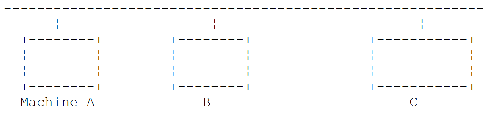 |
- 广播网络——发送设备将信息连同接收设备的地址一起发送到电缆上。所有连接的设备都会收到这些信息，只有目标设备才会保留它们。
- 其访问方式如下：希望发送数据的发送器会监听电缆——从而检测到是否存在载波信号，若存在则表明正在进行传输。这就是CSMA技术（载波侦听多路访问）。 若未检测到载波，发送器即可决定开始发送。可能有多个发送器同时做出这一决定。此时，发送的信号会相互干扰，即发生“碰撞”。 发射器能检测到这种情况：在向电缆发送信号的同时，它也会监听电缆上实际传输的内容。如果检测到电缆上传输的信息并非自己发送的，它便会推断出发生了碰撞，并停止发送。其他正在发送的发射器也会采取同样的措施。 各设备将在一个随机时间间隔后恢复发送，该间隔因设备而异。该技术被称为CD（碰撞检测）。因此，该访问方式被称为CSMA/CD。
- 48位地址。每台机器都有一个地址，此处称为物理地址，该地址被写入连接机器与网线的网卡中。该地址被称为机器的Ethernet地址。
网络层
在此层中，我们发现 IP、ICMP、ARP 和 RARP 协议。
在网络的两个节点之间传输数据包 | |
ICMP 实现一台机器上的 IP 协议程序与另一台机器上的该协议程序之间的通信。因此，它是在 IP 协议内部进行消息交换的协议。 | |
负责将机器的互联网地址映射到机器的物理地址 | |
将机器物理地址映射到机器互联网地址 |
传输层/会话层
在此层中，包含以下协议：
确保两个客户端之间信息可靠地传递 | |
确保两个客户端之间信息的不可靠传输 |
应用层/表示层/会话层
此处包含多种协议：
终端仿真器，允许机器A作为终端连接到机器B | |
支持文件传输 | |
支持文件传输 | |
支持网络用户之间的消息交换 | |
将主机名转换为该主机的互联网地址 | |
由 sun 创建 MicroSystems，它规定了一种与机器无关的数据标准表示形式 | |
同样由 Sun 定义，是一种独立于传输层的远程应用程序间通信协议。该协议至关重要：它使程序员无需了解传输层的细节，并使应用程序具有可移植性。该协议基于 XDR 协议 | |
（同样由Sun定义），该协议使一台机器能够“查看”另一台机器的文件系统。它基于前面的RPC协议 |
11.1.4. 互联网协议的工作原理
在 TCP/IP 环境中开发的应用程序通常会使用该环境中的多种协议。应用程序与协议的最高层进行通信。该层将信息传递给下一层，以此类推，直至到达物理介质。 在那里，信息被物理传输至接收端设备，随后将按相反方向穿越相同的协议层，直至到达接收该信息的应用程序。下图展示了信息的传输路径：
 |
举个例子：应用程序 FTP 定义在 Application 层，用于在机器之间传输文件。
- 该应用程序生成一串待传输的字节序列，并将其传递给 transport. 层
- transport层将该字节序列分割为segments和TCP，并在每个分段的开头添加其编号。 这些分段被传递给由 IP 协议管理的网络层。
- IP层创建了一个数据包，将接收到的TCP分段封装其中。 在该数据包的头部，它放置了源机和目的机的互联网地址。它还确定了目的机的物理地址。所有内容都被传递到数据链路层和物理层，即连接机器与物理网络的网卡。
- 在那里，数据包 IP 又被封装进一个物理帧中，并通过电缆发送给接收方。
- 在目标机器上，数据链路层与物理层则执行相反的操作：它将数据包 IP 从物理帧中解封装，并将其传递给 IP 层。
- IP层会验证数据包是否正确：它根据接收到的位计算一个校验和（checksum），并检查该校验和是否与数据包头中的校验和一致。如果不一致，则该数据包将被丢弃。
- 如果数据包被判定为正确，IP层将解封装其中的TCP分段，并将其向上传递给transport层。
- transport层（在本例中为TCP层）会检查分段编号，以确保分段的顺序正确。
- 它还会为 TCP 数据段计算校验和。如果校验通过，TCP 层将向源端发送确认；否则，TCP 数据段将被拒绝。
- TCP层只需将分段的数据部分传输给上一层的接收应用程序即可。
11.1.5. 互联网中的寻址问题
网络中的一个 noeud 可以是一台计算机、一台智能打印机、一台文件服务器，实际上可以是任何能够使用 TCP/IP 协议进行通信的设备。 每个节点都有一个物理地址，其格式取决于网络类型。在以太网中，物理地址由 6 个字节编码。X25 网络中的地址是一个 14 位数字。
节点的互联网地址是一个逻辑地址：它与所使用的硬件和网络无关。这是一个4字节的地址，既标识一个局域网，也标识该网络中的一个节点。互联网地址通常以4个数字的形式表示，即4个字节的值，用点分隔。 因此，昂热大学理学院的 Lagaffe 机器的地址记为 193.49.144.1，而 Liny 机器的地址记为 193.49.144.9。由此可推断，该局域网的互联网地址为 193.49.144.0。该网络上最多可容纳 254 个节点。
由于互联网地址或IP地址与网络无关，因此A网络中的计算机可以与B网络中的计算机进行通信，而无需关心自身所在的网络类型：只需知道对方的IP地址即可。 每个网络的 IP 协议负责双向转换 IP 地址与物理地址。
所有 IP 地址都必须是唯一的。 在法国，INRIA负责分配IP地址。实际上，该机构会为您的局域网分配一个地址，例如为昂热大学理学院网络分配193.49.144.0。 该网络的管理员随后可以按需分配 IP 193.49.144.1 至 193.49.144.254 之间的地址。该地址通常会被记录在每台联网机器的特定文件中。
11.1.5.1. IP 地址类
一个 IP 地址是由 4 个字节组成的序列，通常记为 I1.I2.I3.I4，实际上包含两个地址：
- 网络地址
- 该网络中某个节点的地址
根据这两个字段的大小，IP地址分为3类：A类、B类和C类。
A类
地址 IP：I1.I2.I3.I4 具有 R1.N1.N2.N3 的形式，其中
R1 是网络地址
N1.N2.N3 是该网络中某台机器的地址
更准确地说，A类地址 IP 的形式如下：
其中网络地址占用7位，节点地址占用24位。因此，A类网络最多可有127个，每个网络最多包含2²⁴个节点。
B类
在此，地址 IP：I1.I2.I3.I4 的形式为 R1.R2.N1.N2，其中
R1.R2 是网络地址
N1.N2 是该网络中某台机器的地址
更准确地说，B类地址IP的形式如下：
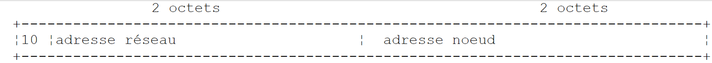 |
网络地址和节点地址各占2字节（确切地说，是14位）。因此，我们可以拥有2¹⁴个B类网络，每个网络最多包含2¹⁶个节点。
C类
在此类中，地址 IP：I1.I2.I3.I4 的格式为 R1.R2.R3.N1，其中
R1.R2.R3 是网络地址
N1 是该网络中某台机器的地址
更准确地说，C类地址IP的形式如下：
 |
其中网络地址占用3个字节（减去3位），节点地址占用1个字节。因此，我们可以拥有221个C类网络，每个网络最多包含256个节点。
安格斯大学理学院的计算机 Lagaffe 的地址为 193.49.144.1，可见其高字节值为 193，即二进制表示为 11000001。由此可推断该网络属于 C 类。
保留地址
- 某些 IP 地址属于网络地址，而非网络中的节点地址。 即那些节点地址被设为0的地址。因此，地址193.49.144.0是昂热大学理学院网络的地址。由此可知，网络中没有任何节点的地址可以是零。
- 当在地址 IP 中，节点地址仅由 1 组成时，则该地址为广播地址：该地址代表网络中的所有节点。
- 在理论上可容纳2⁸=256个节点的C类网络中，如果剔除两个被禁止的地址，则仅剩254个可用地址。
11.1.5.2. 互联网地址 <--> 物理地址转换协议
我们已经看到，当一台机器向另一台机器发送信息时，这些信息在通过IP层时会被封装在数据包中。这些数据包的形式如下：
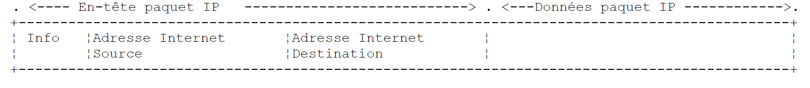 |
因此，数据包 IP 包含源机和目标机的互联网地址。当该数据包被传递到负责将其发送至物理网络的层时，会添加其他信息以形成最终发送至网络的物理帧。例如，以太网上的帧格式如下：
 |
在最终的帧中，包含源主机和目标主机的物理地址。这些地址是如何获得的？
发送方主机已知其通信对象的主机地址为 IP，它会通过一种名为 ARP（地址解析协议）的特殊协议来获取该主机的物理地址。
- 它发送一种名为 ARP 的特殊数据包，其中包含目标机器的地址 IP。同时，它还特意在该数据包中添加了自己的地址 IP 及其物理地址。
- 该数据包被发送至网络中的所有节点。
- 这些节点识别出该数据包的特殊性质。识别出数据包中包含其地址 IP 的节点，会通过向数据包的发送方发送其物理地址来响应。它是如何做到的？因为它在数据包中找到了发送方的地址 IP 及其物理地址。
- 因此，发件人收到了其所需的物理地址。它将该地址存储在内存中，以便日后向同一收件人发送其他数据包时使用。
一台机器的 IP 地址通常记录在其某个文件中，因此它可以通过查阅该文件来获取该地址。该地址可以更改：只需编辑该文件即可。而物理地址则记录在网卡的内存中，无法更改。
当管理员希望重新规划网络结构时，可能需要更改所有节点的 IP 地址，从而需要编辑各个节点的配置文件。如果机器数量众多，这不仅费时费力，还容易出错。 一种方法是：不直接为机器分配 IP 地址，而是将一个特殊代码写入该文件中，机器将据此从该文件中获取其 IP 地址。 当机器发现自己没有 IP 地址时，会通过一种名为 RARP（反向地址解析协议）的协议进行请求。 随后，它向网络发送一个名为 RARP 的特殊数据包（类似于前面的 ARP 数据包），并在其中写入其物理地址。该数据包被发送至所有节点，这些节点随后识别出一个 RARP 数据包。 其中一个节点，名为 RARP 服务器，拥有一个文件，其中记录了所有节点的物理地址与 IP 地址之间的对应关系。 于是，它向数据包 RARP 的发送方响应，将其 IP 地址发回给对方。因此，如果管理员想要重新配置网络，只需编辑服务器 RARP 的映射文件即可。 该服务器通常应拥有一个固定的 IP 地址，且无需自行使用 RARP 协议即可知晓该地址。
11.1.6. 互联网中的所谓 IP 网络层
IP协议（互联网协议）定义了数据包应采用的形式，以及在发送或接收时应如何处理它们。这种特殊类型的数据包被称为IP数据报。我们之前已经介绍过它：
 |
关键在于，除了待传输的数据外，IP数据报还包含源机和目的机的互联网地址。因此，接收方能够识别消息的发送者。
与网络帧的长度由其传输的网络的物理特性决定不同，数据报 IP 的长度由软件固定，因此在不同的物理网络上长度保持不变。 我们看到，从网络层向下到物理层时，数据报 IP 被封装在物理帧中。我们以以太网的物理帧为例：
物理帧在节点间传输，最终到达目的地，而该目的地可能并不位于与发送端机器相同的物理网络上。 因此，数据包 IP 可能在连接不同类型网络的节点处，依次被封装到不同的物理帧中。此外，数据包 IP 可能因体积过大而无法封装到物理帧中。 此时，发生此问题的节点上的 IP 软件会根据特定规则将 IP 数据包拆分为 fragments，随后将它们分别发送至物理网络。这些数据包仅会在最终目的地被重新组装。
11.1.6.1. 路由
路由是指将数据包IP传输至目的地的方法。主要有两种方式：直接路由和间接路由。
直接路由
直接路由是指在同一网络内，将数据包 IP 从发件人直接传输至收件人的过程：
- 发送 IP 数据报的机器拥有收件人的地址 IP。
- 它通过协议 ARP 获取收件人的物理地址，或者如果该地址已存在于其表中，则直接从表中获取。
- 它将数据包发送到网络上的该物理地址。
间接路由
间接路由是指将数据包 IP 转发至位于发件人所属网络之外的另一个网络上的目的地。在这种情况下，源机和目标机的 IP 地址中的网络地址部分不同。源机识别到这一点。 随后，它将数据包发送到一个名为路由器（router）的特殊节点。该节点连接本地网络与其他网络，源主机在其表中找到了该路由器的地址 IP——该地址最初是从文件、永久存储器或网络上流通的信息中获取的。
路由器连接两个网络，并在这两个网络内部拥有地址 IP。
 |
在上述示例中：
. 网络 1 的互联网地址为 193.49.144.0，网络 2 的地址为 193.49.145.0。
. 在网络1内部，路由器的地址为193.49.144.6；在网络2内部，路由器的地址为193.49.145.3。
路由器的作用是将收到的数据包IP（该数据包包含在网络1的典型物理帧中）转换为可在网络2上传输的物理帧。 如果数据包收件人的地址 IP 位于网络 2 中，路由器将直接向其发送数据包；否则，它会将数据包发送给另一台路由器，该路由器连接网络 2 与网络 3，以此类推。
11.1.6.2. 错误和控制消息
同样位于网络层（即与 IP 协议处于同一层级）的，还有 ICMP 协议（互联网控制消息协议）。该协议用于发送有关网络内部运行状况的消息：节点故障、路由器拥塞等…… ICMP消息被封装在IP数据包中，并通过网络发送。 各节点的 IP 层会根据收到的 ICMP 消息采取相应的行动。因此，应用程序本身永远不会察觉到这些网络特有的问题。
节点将利用 ICMP 信息来更新其路由表。
11.1.7. 传输层：UDP 和 TCP 协议
11.1.7.1. UDP 协议：用户数据报协议
UDP 协议支持两点间非可靠的数据交换，即无法保证数据包能正确路由至目的地。应用程序若需要，可自行处理此问题，例如在发送消息后等待确认收到，再发送下一条消息。
目前，在网络层面，我们讨论的是设备的 IP 地址。然而，在一台设备上，可能同时存在多个进程，且这些进程均可相互通信。 因此，在发送消息时，不仅需要指定接收机器的 IP 地址，还需指定接收进程的“名称”。该名称实际上是一个数字，称为端口号。 某些端口号被保留用于标准应用程序：例如，端口 69 用于 TFTP（简单文件传输协议）应用程序。
由 UDP 协议处理的数据包也被称为数据报。它们的格式如下：
这些数据报将被封装在 IP 数据包中，随后封装在物理帧中。
11.1.7.2. TCP协议：传输控制协议
仅靠 UDP 协议无法确保通信安全：应用程序开发人员必须自行设计一种协议，以检测数据包是否被正确转发。TCP 协议（传输控制协议）可避免这些问题。其特征如下：
- 希望发送数据的进程首先需与接收该信息的目标进程建立连接。该连接建立在发送端机器的某个端口与接收端机器的某个端口之间。两个端口之间由此形成一条虚拟路径，该路径仅供建立连接的两个进程专属使用。
- 源进程发送的所有数据包均沿此虚拟路径传输，并按发送顺序到达接收端——而UDP协议无法保证这一点，因为数据包可能沿不同路径传输。
- 发送的信息呈现连续性特征。发送进程按自身节奏发送信息。这些信息未必会立即发送：TCP协议会等待积累足够的数据后再进行发送。它们被存储在一个名为TCP段的结构中。 该分段填满后将传输至 IP 层，并在该层封装为 IP 数据包。
- TCP协议发送的每个分段都有编号。接收方TCP协议会验证是否按顺序正确接收了这些分段。对于每个正确接收的分段，它都会向发送方发送一份确认。
- 当发送方收到该确认时，会通知发送进程。因此，发送进程可以得知某个分段已成功送达，而这在 UDP 协议中是无法实现的。
- 如果经过一段时间后，发送了数据段的 TCP 协议未收到确认，它将重发该数据段，从而保证信息传输服务的质量。
- 在两个通信进程之间建立的虚拟电路是 full-duplex：这意味着信息可以双向传输。因此，即使源进程仍在发送信息，目标进程也可以发送确认。 例如，这使得源协议 TCP 能够发送多个数据段而无需等待确认。如果经过一段时间后，它发现尚未收到编号为 n 的某个数据段的确认，它将从该点重新开始发送数据段。
11.1.8. 应用层
在 UDP 和 TCP 协议之上，存在多种标准协议：
TELNET
该协议允许网络中机器 A 的用户连接到机器 B（通常称为主机）。TELNET 在机器 A 上模拟一个所谓的通用终端。 因此，用户操作起来就如同拥有了一台连接到机器 B 的终端。Telnet 基于 TCP 协议。
FTP：（文件传输协议）
该协议支持两台远程机器之间的文件交换，以及文件操作（例如创建目录）。它基于 TCP 协议。
TFTP：（简易文件传输控制）
该协议是 FTP 的变体。它基于 UDP 协议，且比 FTP 更为简单。
DNS：（域名系统）
当用户希望与远程机器交换文件时（例如通过 FTP），必须知道该机器的互联网地址。 例如，要在昂热大学的Lagaffe机器上进行FTP操作，需按以下方式启动FTP：FTP 193.49.144.1
这要求必须有一个将机器与 IP 地址相互映射的目录。该目录中，机器很可能使用符号名称来标识，例如：
昂热大学的 DPX2/320 机器
昂热大学的 Sun 机器 ISERPA
显然，用一个名字来称呼一台机器，要比用它的地址IP来称呼更方便。这就引出了名称唯一性的问题：有数百万台机器相互连接。人们可能会设想由一个中央机构来分配名称。但这无疑会相当繁琐。实际上，名称的管理已被分散到**各个域名中**。 每个域名通常由一个运作非常灵活的机构管理，该机构在选择机器名称方面拥有完全的自由。例如，法国境内的机器属于**fr域名**，该域名由巴黎的Inria管理。为了进一步简化，管理权限被进一步下放：**在fr域名**内部创建了子域名。因此，昂热大学属于**univ-Angers域名**。 管理该域的服务机构在为昂热大学网络中的计算机命名方面拥有完全的自由。目前该域尚未进一步细分。但在拥有大量联网计算机的大型大学中，可能会进行细分。
昂热大学的 DPX2/320 被命名为 Lagaffe，而 PC 和 486DX50 则被命名为 *liny*。 如何从外部引用这些机器？需明确它们所属的域名层级。因此，机器 Lagaffe 的完整名称为：
**Lagaffe.univ-Angers.fr**
在域内部，可以使用相对名称。因此，在 **fr** 域内且位于 **univ-Angers** 域之外时，可以通过以下方式引用 Lagaffe 这台机器：
**Lagaffe.univ-Angers**
最后，在 *univ-Angers* 域内，只需使用
**Lagaffe**
因此，应用程序可以通过名称来引用一台机器。但归根结底，仍需获取该机器的互联网地址。这如何实现？假设从机器 A 想要与机器 B 通信。
- 如果机器 B 与机器 A 属于同一个域，那么很可能在机器 A 的某个文件中就能找到其地址 IP。
- 否则，机器A将在另一个文件（或与前文相同的文件）中找到一份包含若干域名服务器及其地址IP的列表。域名服务器的职责就是将机器名称与其地址IP进行映射。 计算机A将向列表中的第一个域名服务器发送一个特殊请求，称为DNS请求，其中包含所查询的计算机名称。如果被查询的服务器在其记录中拥有该名称，它将向计算机A发送相应的地址IP。 否则，该服务器也会在其文件中查找可查询的域名服务器列表，并据此进行查询。因此，将查询一定数量的域名服务器，但并非无序进行，而是以尽量减少请求的方式进行。如果最终找到了该机器，响应将传回机器A。
XDR：（eXternal 数据表示）
该协议由 sun MicroSystems 创建，规定了一种与机器无关的数据标准表示形式。
RPC：（远程过程调用）
该协议同样由 sun 定义，是一种独立于传输层的远程应用程序通信协议。该协议非常重要：它使程序员无需了解传输层的细节，并使应用程序具有可移植性。该协议基于 XDR 协议
NFS：网络文件系统
该协议同样由Sun定义，它允许一台机器“看到”另一台机器的文件系统。它基于前面的RPC协议。
11.1.9. 结论
在本篇导论中，我们概述了互联网协议的一些主要内容。若想深入了解这一领域，可阅读道格拉斯·科默（Douglas Comer）的优秀著作：
书名 TCP/IP：架构、协议与应用。
作者 道格拉斯·COMER
出版社 InterEditions
11.2. IP 地址管理的 .NET 类
互联网上的每台机器都由一个 IP（互联网协议）地址唯一标识，该地址可采用以下两种形式：
- IPv4：采用32位编码，表示为“I1.I2.I3.I4”形式的字符串，其中In是1到254之间的数字。这是目前最常见的IP地址。
- IPv6：采用128位编码，表示形式为字符串“[I1.I2.I3.I4.I5.I6.I7.I8]”，其中In由4位十六进制数字组成。本文档中将不使用IPv6格式的地址。
一台机器也可以通过一个同样唯一的名称来定义。该名称并非强制要求，因为应用程序最终始终使用机器的 IP 地址。这些名称的存在是为了方便用户。 因此，使用浏览器访问 URL http://www.ibm.com 比访问 URL http://129.42.17.99 更为便捷，尽管这两种方法均可行。
如果一台机器同时物理连接到多个网络，它可能拥有多个 IP 地址。此时，它在每个网络上都拥有一个 IP 地址。
一个 IP 地址在 .NET 中可以有两种表示形式：
- 以字符串形式“I1.I2.I3.I4”或“[I1.I2.I3.I4.I5.I6.I7.I8]”表示
- 以 IPAddress 类型对象的形式
类 IPAddress
在类 IPAddress 的方法 M、属性 P 和常量 C 中，包含以下内容：
P | 地址 IP 的家族。类型 AddressFamily 是一个枚举。其两个常用值是： AddressFamily.InterNetwork：对应地址 IPv4 AddressFamily.InterNetworkV6：用于地址 IPv6 | |
C | 地址 IP 表示“0.0.0.0”。当某项服务与该地址关联时，意味着该服务在其运行的主机上所有 IP 格式的地址上都接受客户端连接。 | |
C | 地址 IP "127.0.0.1"。称为“环回地址”。当一个服务与该地址相关联时，意味着它只接受与其位于同一台机器上的客户端。 | |
C | 地址 IP "255.255.255.255"。当服务与该地址关联时，表示该服务不接受任何客户端。 | |
M | 尝试将地址 IP ipString 以“I1.I2.I3.I4”的形式作为 IPAddress 地址对象传递。 如果操作成功，则返回 true。 | |
M | 如果地址 IP 为“127.0.0.1”，则返回 true | |
M | 将地址 IP 转换为“I1.I2.I3.I4”或“[I1.I2.I3.I4.I5.I6.I7.I8]” |
地址 IP <--> nomMachine 的映射由一个名为 DNS（域名系统）的互联网分布式服务提供。 Dns 类的静态方法可用于建立地址 IP <--> nomMachine 的关联：
根据字符串形式的 IP 地址或主机名，返回 IPHostEntry 地址。若无法找到该主机，则抛出异常。 | |
根据类型为 IPAddress 的地址 IP 返回地址 IPHostEntry。如果找不到该机器，则抛出异常。 | |
返回执行该指令的程序所在机器的名称 | |
返回由其名称或其中一个地址 IP 标识的机器的地址 IP。 |
一个 IPHostEntry 实例封装了 IP 地址、别名以及一台机器的名称。IPHostEntry 类型的定义如下：
P | 机器的 IP 地址表 | |
P | 机器的别名。这些是与机器的不同地址相对应的名称。 | |
P | 机器的主主机名 |
请看以下程序，它会显示当前运行的机器名称，然后以交互方式给出 IP 地址与机器名称的对应关系：
using System;
using System.Net;
namespace Chap9 {
class Program {
static void Main(string[] args) {
// 显示本地机器名称
// 随后以交互方式提供网络机器信息
// 通过名称或地址标识的 IP
// 本地计算机
Console.WriteLine("Machine Locale= {0}" ,Dns.GetHostName());
// 交互式问答
string machine;
IPHostEntry ipHostEntry;
while (true) {
// 输入要查找的机器的名称或地址 IP
Console.Write("Machine recherchée (rien pour arrêter) : ");
machine = Console.ReadLine().Trim().ToLower();
// 结束？
if (machine == "") return;
// 异常处理
try {
// 设备查询
ipHostEntry = Dns.GetHostEntry(machine);
// 设备名称
Console.WriteLine("Machine : " + ipHostEntry.HostName);
// 该机器的地址 IP
Console.Write("Adresses IP : {0}" , ipHostEntry.AddressList[0]);
for (int i = 1; i < ipHostEntry.AddressList.Length; i++) {
Console.Write(", {0}" , ipHostEntry.AddressList[i]);
}
Console.WriteLine();
// 该机器的别名
if (ipHostEntry.Aliases.Length != 0) {
Console.Write("Alias : {0}" , ipHostEntry.Aliases[0]);
for (int i = 1; i < ipHostEntry.Aliases.Length; i++) {
Console.Write(", {0}" , ipHostEntry.Aliases[i]);
}
Console.WriteLine();
}
} catch {
// 该机器不存在
Console.WriteLine("Impossible de trouver la machine [{0}]",machine);
}
}
}
}
}
运行结果如下：
11.3. 互联网编程基础
11.3.1. 概述
考虑两台远程机器 A 和 B 之间的通信：
 |
当机器 A 上的应用程序 AppA 想要与互联网上的机器 B 上的应用程序 AppB 进行通信时，它必须了解以下几点：
- 地址 IP 或计算机 B 的名称
- 应用程序 AppB 所使用的端口号。事实上，机器 B 可以支持许多在互联网上运行的应用程序。当它收到来自网络的信息时，必须知道这些信息是发给哪个应用程序的。 机器B上的应用程序通过称为通信端口的接口访问网络。机器B接收的数据包中包含这一信息，以便将其分发给正确的应用程序。
- 机器B所支持的通信协议。在本研究中，我们将仅使用TCP-IP协议。
- 应用程序AppB所接受的对话协议。实际上，机器A和B将进行“对话”。它们传递的内容将被封装在TCP-IP协议中。 然而，当链路另一端的AppB应用程序接收到AppA应用程序发送的信息时，它必须能够对其进行解析。这类似于两个人A和B通过电话交流的情况：他们的对话通过电话进行传输。 说话内容将由电话A编码为信号，通过电话线传输，到达电话B后被解码。此时，B才能听到说话内容。这就是对话协议概念的由来：如果A说的是法语，而B不懂这种语言，A和B就无法进行有效的对话。
因此，两个通信的应用程序必须就将采用的对话类型达成一致。 例如，与服务ftp的对话与服务pop的对话并不相同：这两项服务接受的命令不同，它们采用的是不同的对话协议。
11.3.2. TCP协议的特性
本文仅探讨使用 TCP 传输协议的网络通信。在此回顾该协议的特征：
- 希望发送信息的进程首先会与接收该信息的目标进程建立连接。该连接建立在发送端机器的一个端口与接收端机器的一个端口之间。两个端口之间由此形成一条虚拟路径，该路径仅供建立连接的这两个进程专属使用。
- 源进程发送的所有数据包均沿此虚拟路径传输，并按发送顺序到达
- 发送的信息呈现连续性特征。发送进程按自身节奏发送信息。这些信息未必会立即发送：TCP协议会等待积累足够的数据后再进行发送。它们被存储在一个名为TCP分段的结构中。 该分段填满后将传输至 IP 层，并在该层封装为 IP 数据包。
- TCP协议发送的每个分段都有编号。接收方TCP协议会验证是否按顺序正确接收了这些分段。对于每个正确接收的分段，它都会向发送方发送一份确认。
- 当发送方收到该确认后，会通知发送进程。因此，发送进程可以得知该分段已成功送达。
- 如果经过一段时间后，发送了该分段的 TCP 协议未收到确认，它将重发该分段，从而保证信息传输服务的质量。
- 在两个通信进程之间建立的虚拟电路是 full-duplex：这意味着信息可以双向传输。因此，即使源进程仍在发送信息，目标进程也可以发送确认。 例如，这使得源协议 TCP 能够发送多个数据段，而无需等待确认。如果经过一段时间后，它发现尚未收到编号为 n 的某个数据段的确认，它将从该点重新开始发送数据段。
11.3.3. 客户端-服务器关系
通常，互联网通信是非对称的：主机 A 发起连接以向主机 B 请求服务：它明确表示希望与主机 B 的 SB1 服务建立连接。主机 B 接受或拒绝该请求。 若服务器接受，机器A即可向服务SB1发送请求。这些请求必须符合服务SB1所理解的对话协议。 由此，在称为客户端的机器A与称为服务器端的机器B之间建立起一种请求-响应对话。双方中的一方将关闭连接。
11.3.4. 客户端架构
请求服务器应用程序服务的网络程序架构如下：
ouvrir la connexion avec le service SB1 de la machine B
si réussite alors
tant que ce n'est pas fini
préparer une demande
l'émettre vers la machine B
attendre et récupérer la réponse
la traiter
fin tant que
finsi
fermer la connexion
11.3.5. 服务器架构
提供服务的程序架构如下：
ouvrir le service sur la machine locale
tant que le service est ouvert
se mettre à l'écoute des demandes de connexion sur un port dit port d'écoute
lorsqu'il y a une demande, la faire traiter par une autre tâche sur un autre port dit port de service
fin tant que
服务器程序对客户端的初始连接请求与后续获取服务的请求进行区别处理。该程序本身并不提供服务。如果它提供服务，那么在服务期间就无法监听连接请求，客户端将无法获得服务。 因此，它采取了另一种方式：一旦监听端口接收到连接请求并予以接受，服务器就会创建一个任务，负责提供客户端请求的服务。该服务是在服务器机器上的另一个端口（称为服务端口）上提供的。这样就可以同时为多个客户端提供服务。
一个服务任务的结构如下：
tant que le service n'a pas été rendu totalement
attendre une demande sur le port de service
lorsqu'il y en a une, élaborer la réponse
transmettre la réponse via le port de service
fin tant que
libérer le port de service
11.4. 了解 互联网通信协议
11.4.1. 简介
当客户端连接到服务器时，双方之间便会建立对话。这种对话的性质构成了所谓的服务器通信协议。互联网中最常见的协议包括以下几种：
- HTTP：超文本传输协议（HTTP）——与Web服务器（HTTP服务器）进行交互的协议
- SMTP：简单邮件传输协议（SMTP）——与电子邮件发送服务器（SMTP服务器）进行通信的协议
- POP：邮局协议（POP）——与电子邮件存储服务器（服务器 POP）通信的协议。该协议用于检索已接收的电子邮件，而非发送电子邮件。
- FTP：文件传输协议（FTP）——用于与文件存储服务器（服务器 FTP）通信的协议。
所有这些协议的共同特点是属于文本行协议：客户端和服务器之间交换的是文本行。如果有一个客户端能够：
- 与 TCP 服务器建立连接
- 在控制台显示服务器发送的文本行
- 将用户输入的文本行发送给服务器
那么只要了解该协议的规则，我们就能与采用文本行协议的 TCP 服务器进行交互。
Unix或Windows系统上的telnet程序就是这样的客户端。在Windows系统上，还有一款名为putty的工具，本文将使用该工具。putty可从地址[http://www.putty.org/]下载。这是一个可直接运行的可执行文件（.exe）。我们将按以下方式对其进行配置：
 |
- [1]：要连接的 TCP 服务器的地址 IP 或其名称
- [2]：TCP服务器的监听端口
- [3]：采用 Raw 模式，该模式表示原始 TCP 连接。
- [4]：采用 Never 模式，以防止服务器关闭连接时 putty 客户端窗口关闭。
- [6,7]：控制台的列数/行数
- [5]：内存中保留的行数上限。HTTP服务器可能发送大量行，因此需要支持滚动浏览。
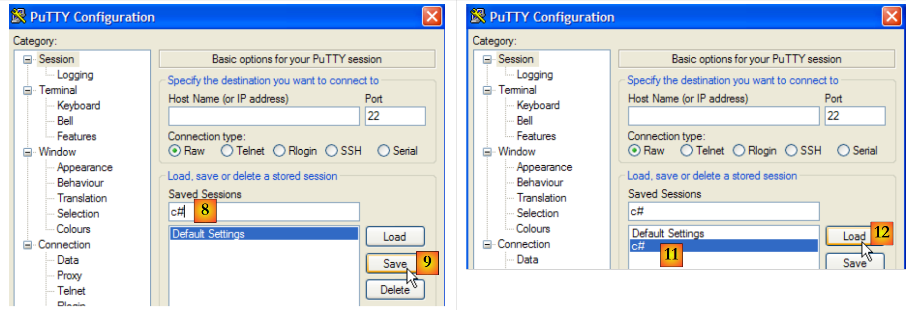 |
- [8,9]：若要保留先前设置，请为配置命名（[8]），并将其保存（[9]）。
- [11,12]：要恢复已保存的配置，请选择 [11] 并加载 [12]。
配置好此工具后，让我们来了解一些 TCP 协议。
11.4.2. HTTP协议（HyperText传输协议）
让我们将客户端 TCP 连接到 istia.univ-angers.fr 机器上的 Web 服务器 [2]，端口 80 [3]：
 |
在 putty 的控制台中，我们构建了以下对话： HTTP：
- 第1-4行是客户端的请求，通过键盘输入
- 第 5-19 行是服务器的响应
- 第1行：语法 GET UrlDocument HTTP/1.1 - 我们请求网址 /，c.a.d。 网站根目录 [istia.univ-angers.fr]。
- 第 2 行：语法 Host: 主机:端口
- 第 3 行：语法 Connection: [mode de la connexion]。模式 [close] 指示服务器在发送响应后关闭连接。模式 [Keep-Alive] 要求保持连接打开。
- 第 4 行：空行。第 1-3 行称为 HTTP 头部。除此处展示的头部外，可能还存在其他头部。HTTP 头部的结尾以空行标记。
- 第5-13行：服务器响应的HTTP头部——同样以空行结束。
- 第14-19行：服务器发送的文档，此处为HTML文档
- 第 5 行：HTTP/1.1 语法 msg 代码——代码 200 表示已找到所请求的文档。
- 第 6 行：服务器的日期和时间
- 第 7 行：提供 Web 服务的软件标识——此处为运行于 Linux / Debian 系统的 Apache 服务器
- 第8行：该文档由PHP动态生成
- 第 9 行：客户端身份识别 Cookie——若客户端希望在下一次连接时被识别，则需在其请求头中返回此 Cookie HTTP。
- 第10行：表示在提供所请求的文档后，服务器将关闭连接
- 第11行：文档将分块（chunked）传输，而非一次性传输。
- 第12行：文档类型：此处为HTML文档
- 第13行：空行，表示服务器HTTP头部的结束
- 第14行：十六进制数，表示文档第1个数据块的字符数。当该数值为0（第19行）时，客户端将知道已接收完整文档。
- 第15-18行：接收到的文档内容。
连接已关闭，客户端 putty 处于非活动状态。让我们重新连接 [1] 并清除屏幕上之前的显示内容 [2,3]：
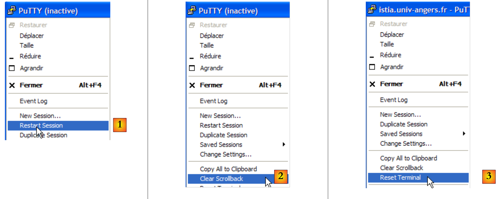 |
此次的对话框如下：
- 第 1 行：请求了一个不存在的文档
- 第 5 行：服务器 HTTP 返回 404 状态码，表示未找到所请求的文档。
如果使用 Firefox 浏览器请求该文档：

若查看源代码 [Affichage/Code source]：
我们获得了客户端接收的第13至22行内容 putty。此操作的意义在于还能向我们展示响应的头部信息 HTTP。通过Firefox同样可以获取这些信息。
11.4.3. 协议 SMTP（简单邮件传输协议）
 |
SMTP 服务器通常运行在 25 端口 [2] 上。连接到 [1] 服务器。在此，通常应选择一个
，因为IP服务器通常配置为仅接受来自同一域内机器的请求。 此外，个人电脑上的防火墙或杀毒软件通常配置为不接受来自外部机器的25端口连接。因此，可能需要重新配置该防火墙或杀毒软件。
putty 客户端窗口中的 SMTP 对话框如下所示：
下文中 (D) 表示客户端请求，(R) 表示服务器响应。
- 第 1 行：(R) 服务器 SMTP 的欢迎信息
- 第 2 行：(D) HELO 命令用于问候
- 第 3 行：(R) 服务器的响应
- 第4行：(D) 发件人地址，例如 mail from: someone@gmail.com
- 第 5 行：(R) 服务器的响应
- 第 6 行：(D) 收件人地址，例如 rcpt to: someoneelse@gmail.com
- 第7行：(R) 服务器响应
- 第 8 行：(D) 标记消息的开始
- 第 9 行：(R) 服务器响应
- 第10-12行：(D) 待发送的消息，以仅含一个句点的行结尾。
- 第13行：(R) 服务器的响应
- 第14行：(D) 客户端报告已完成
- 第15行：(R) 服务器的响应，随后关闭连接
11.4.4. POP 协议（邮局协议）
 |
POP 服务器通常在 110 端口上运行 [2]。 连接到服务器 [1]。客户端窗口 putty 中的对话如下：
- 第1行：(R) 服务器POP的欢迎信息
- 第 2 行：(D) 客户端提供其标识 POP、c.a.d。即用于阅读邮件的登录名
- 第3行：(R) 服务器的响应
- 第4行：(D) 客户端的密码
- 第 5 行：(R) 服务器的响应
- 第6行：(D) 客户端请求其邮件列表
- 第7-12行：(R) 客户端邮箱中的邮件列表，格式为 [N° du message taille en octets du message]
- 第13行：(D) 请求第64号邮件
- 第14-25行：(R) 第64号邮件，其中第15-22行为邮件头，第23-24行为邮件正文。
- 第26行：(D) 客户端表示已完成
- 第27行：(R) 服务器响应，随后将关闭连接。
11.4.5. FTP协议（文件传输协议）
FTP协议比之前介绍的更为复杂。要查看客户端与服务器之间交换的文本行，可以使用FileZilla [http://www.filezilla.fr/]等工具。
 |
Filezilla 是一款 FTP 客户端，提供基于 Windows 的界面用于进行文件传输。 用户在 Windows 界面上的操作会被转换为 FTP 命令，并记录在 [1] 中。这是了解 FTP 协议命令的好方法。
11.5. 网络编程中的 .NET 类
11.5.1. 选择合适的类
.NET框架提供了多种用于网络操作的类：
 |
- Socket类是与网络交互最紧密的类。它能够对网络连接进行精细管理。 术语 socket 指代一个电源插座。该术语已被扩展，用于指代软件网络插座。在机器 A 和 B 之间的 TCP-IP 通信中，实际上是两个 sockets 在相互通信。 应用程序可直接与 sockets 进行交互。如上文中的应用程序 A 即为一例。套接字可以是 client 或 serveur 类型的套接字。
- 如果希望在比 Socket 类更低层次上进行操作，可以使用
- TcpClient 类来创建 TCP 客户端
- TcpListener 来创建 TCP 服务器
这两个类通过代为处理套接字管理的技术细节，为使用它们的应用程序提供了更简化的网络通信视图。
- .NET 提供了针对特定协议的类：
- SmtpClient 类用于管理 SMTP 协议，该协议用于与 SMTP 类（用于发送电子邮件的服务器）进行通信
- 类 WebClient 用于管理与 Web 服务器通信的 HTTP 或 FTP 协议。
需要注意的是，Socket类本身足以管理所有TCP/IP通信，但我们首先应尽量使用更高层次的类，以便简化TCP/IP应用程序的编写。
11.5.2. TcpClient类
在多数情况下，TcpClient类是创建TCP服务客户端的合适选择。该类包含以下C构造函数、M方法和P属性：
C | 在指定机器（hostname）上，与运行在指定端口（port）的服务建立 TCP 连接。 例如：new TcpClient("istia.univ-angers.fr",80) 用于连接到机器 istia.univ-angers.fr 的 80 端口 | |
P | 客户端用于与服务器通信的套接字。 | |
M | 获取一个用于与服务器进行读写操作的流。正是这个流使得客户端与服务器之间的数据交换成为可能。 | |
M | 关闭连接。套接字和流 NetworkStream 也会随之关闭 | |
P | 如果连接已建立，则为真 |
类 NetworkStream 表示客户端与服务器之间的网络流。它继承自类 Stream。 许多客户端-服务器应用程序交换的文本行以换行符“\r\n”结尾。因此，使用 StreamReader 和 StreamWriter 对象在网络流中读取和写入这些行非常有用。 因此，如果一台 M1 机器通过 TcpClient 和 client1 对象与 M2 机器建立了连接，并且它们在交换文本行， 则可按以下方式创建其读写流：
StreamReader in1=new StreamReader(client1.GetStream());
StreamWriter out1=new StreamWriter(client1.GetStream());
out1.AutoFlush=true;
该指令
表示 client1 的写入流不会经过中间缓冲区，而是直接发送到网络。这一点很重要。 通常，当 client1 向其对端发送一行文本时，它会等待对方的响应。如果该行文本实际上已被缓冲在 M1 机器上，且从未发送给 M2 机器，那么该响应将永远不会到来。
若要向 M2 机器发送一行文本，应编写如下代码：
要读取 M2 的响应，应写入：
现在我们已具备编写互联网客户端基础架构的要素，该客户端与服务器之间采用以下基本通信协议：
- 客户端发送包含在一行中的请求
- 服务器发送包含在单行中的响应
using System;
using System.IO;
using System.Net.Sockets;
namespace ... {
class ... {
static void Main(string[] args) {
...
try {
// 正在连接服务
using (TcpClient tcpClient = new TcpClient(serveur, port)) {
using (NetworkStream networkStream = tcpClient.GetStream()) {
using (StreamReader reader = new StreamReader(networkStream)) {
using (StreamWriter writer = new StreamWriter(networkStream)) {
// 未缓冲的输出流
writer.AutoFlush = true;
// 请求-响应循环
while (true) {
// 请求来自键盘
Console.Write("Demande (bye pour arrêter) : ");
demande = Console.ReadLine();
// 结束了吗？
if (demande.Trim().ToLower() == "bye")
break;
// 向服务器发送请求
writer.WriteLine(demande);
// 读取服务器的响应
réponse = reader.ReadLine();
// 处理响应
...
}
}
}
}
}
} catch (Exception e) {
// 错误
...
}
}
}
}
- 第 11 行：建立客户端连接——using 子句确保与该连接相关的资源将在退出 using 时被释放。
- 第12行：在using子句中打开网络流
- 第 13 行：在 using 子句中创建并使用读取流
- 第 14 行：在 using 子句中创建并使用写入流
- 第 16 行：不缓冲输出流
- 第 18-31 行：客户端请求/服务器响应循环
- 第 26 行：客户端向服务器发送请求
- 第 28 行：客户端等待服务器的响应。这是一项阻塞操作，类似于键盘读取操作。等待状态将因接收到以“\n”结尾的字符串或流结束而终止。后者发生在服务器关闭与客户端建立的连接时。
11.5.3. TcpListener类
在绝大多数情况下，TcpListener 类是创建 TCP 服务的合适选择。该类包含以下 C 构造函数、M 方法和 P 属性：
C | 创建一个 TCP 服务，该服务将在作为参数传递的端口（port）上监听（listen）客户端的请求，该端口称为监听端口。如果机器连接到多个网络 IP，则该服务将在每个网络上进行监听。 | |
C | 同上，但仅在指定的 IP 地址上进行监听。 | |
M | 启动对客户端请求的监听 | |
M | 接受客户端请求。随后与该客户端建立新的连接，称为服务连接。服务器端使用的端口是随机的，由系统选择。该端口称为服务端口。AcceptTcpClient 返回的结果是服务器端与服务连接关联的对象 TcpClient。 | |
M | 停止监听客户端请求 | |
P | 服务器的监听套接字 |
一个 TCP 服务器的基本结构，该服务器将根据以下协议与客户端进行通信：
- 客户端发送包含在一行中的请求
- 服务器发送包含在单行中的响应
其结构可能如下所示：
using System;
using System.IO;
using System.Net.Sockets;
using System.Threading;
using System.Net;
namespace ... {
public class ... {
...
// 创建监听服务
TcpListener ecoute = null;
try {
// 创建服务——该服务将在机器的所有网络接口上监听
ecoute = new TcpListener(IPAddress.Any, port);
// 启动服务
ecoute.Start();
// 服务循环
TcpClient tcpClient = null;
// 无限循环——可通过 Ctrl-C 终止
while (true) {
// 等待客户端
tcpClient = ecoute.AcceptTcpClient();
// 服务由另一个任务提供
ThreadPool.QueueUserWorkItem(Service, tcpClient);
// 下一个客户端
}
} catch (Exception ex) {
// 报告错误
...
} finally {
// 服务结束
ecoute.Stop();
}
}
// -------------------------------------------------------
// 为某客户提供服务
public static void Service(Object infos) {
// 获取待服务的客户端
Client client = infos as Client;
// 处理连接 TcpClient
try {
using (TcpClient tcpClient = client.CanalTcp) {
using (NetworkStream networkStream = tcpClient.GetStream()) {
using (StreamReader reader = new StreamReader(networkStream)) {
using (StreamWriter writer = new StreamWriter(networkStream)) {
// 未缓冲的输出流
writer.AutoFlush = true;
// 请求/写入响应读取循环
bool fini=false;
while (! fini) != null) {
// 等待客户端请求 - 阻塞操作
demande=reader.ReadLine();
// 准备响应
réponse=...;
// 向客户端发送响应
writer.WriteLine(réponse);
// 下一个请求
}
}
}
}
}
} catch (Exception e) {
// 错误
...
} finally {
// 客户结束
...
}
}
}
}
- 第 14 行：为指定的端口和 IP 地址创建监听服务。 这里需要记住，一台机器至少有两个地址 IP：一个是其本地回环地址“127.0.0.1”，另一个是其在所连接网络上的地址“I1.I2.I3.I4”。 如果它连接到多个网络，则可能拥有其他地址。IPAddress.Any 代表一台机器的所有地址。
- 第16行：监听服务启动。此前该服务已创建，但尚未开始监听。监听即等待客户端的请求。
- 第20-26行：针对每个新客户端，重复执行“等待客户端请求/处理客户端请求”的循环
- 第 22 行：接受客户端请求。方法 AcceptTcpClient 返回一个称为服务实例的 TcpClient：
- 客户使用其客户端的 TcpClient 实例（我们将它称为 TcpClientDemande）发出了请求
- 服务器通过 AcceptTcpClient 接受该请求。该方法在服务器端创建了一个 TcpClient 实例，我们将其称为 TcpClientService。 此时建立了一条TCP连接，两端分别是实例 TcpClientDemande <--> TcpClientService。
- 随后进行的客户端/服务器通信将通过此连接进行。监听服务不再参与其中。
- 第24行：为了使服务器能够同时处理多个客户端，该服务由线程提供，每个客户端对应一个线程。
- 第 32 行：关闭监听服务
- 第38行：由服务线程为某个客户端执行的方法。该方法接收的参数是已连接至待服务客户端的 TcpClient 实例。
- 第38-71行：此处的代码与之前研究过的基本TCP客户端代码类似。
11.6. TCP 客户端/服务器示例
11.6.1. 回显服务器
我们将编写一个回显服务器，该服务器将通过以下命令从 DOS 窗口启动：
ServeurEcho 端口
服务器将在作为参数传入的端口上运行。它仅将客户端发送的请求原样发回给客户端。程序代码如下：
using System;
using System.IO;
using System.Net.Sockets;
using System.Threading;
using System.Net;
// 调用：serveurEcho 端口
// 回显服务器
// 将客户端发送的行发回给客户端
namespace Chap9 {
public class ServeurEcho {
public const string syntaxe = "Syntaxe : [serveurEcho] port";
// 主程序
public static void Main(string[] args) {
// 是否有参数？
if (args.Length != 1) {
Console.WriteLine(syntaxe);
return;
}
// 该参数必须是大于0的整数
int port = 0;
if (!int.TryParse(args[0], out port) || port<=0) {
Console.WriteLine("{0} : {1}Port incorrect", syntaxe, Environment.NewLine);
return;
}
// 创建监听服务
TcpListener ecoute = null;
int numClient = 0; // 下一个客户端编号
try {
// 创建服务——它将在机器的所有网络接口上监听
ecoute = new TcpListener(IPAddress.Any, port);
// 启动服务
ecoute.Start();
// 后续
Console.WriteLine("Serveur d'écho lancé sur le port {0}", ecoute.LocalEndpoint);
// 服务线程
ThreadPool.SetMinThreads(10, 10);
ThreadPool.SetMaxThreads(10, 10);
// 服务循环
TcpClient tcpClient = null;
// 无限循环 - 将被 Ctrl-C 终止
while (true) {
// 等待客户端
tcpClient = ecoute.AcceptTcpClient();
// 服务由另一个任务提供
ThreadPool.QueueUserWorkItem(Service, new Client() { CanalTcp = tcpClient, NumClient = numClient });
// 下一个客户端
numClient++;
}
} catch (Exception ex) {
// 报告错误
Console.WriteLine("L'erreur suivante s'est produite sur le serveur : {0}", ex.Message);
} finally {
// 服务结束
ecoute.Stop();
}
}
// -------------------------------------------------------
// 为回显服务器的客户端提供服务
public static void Service(Object infos) {
// 获取待服务的客户端
Client client = infos as Client;
// 向客户端提供服务
Console.WriteLine("Début de service au client {0}", client.NumClient);
// 处理连接 TcpClient
try {
using (TcpClient tcpClient = client.CanalTcp) {
using (NetworkStream networkStream = tcpClient.GetStream()) {
using (StreamReader reader = new StreamReader(networkStream)) {
using (StreamWriter writer = new StreamWriter(networkStream)) {
// 未缓冲的输出流
writer.AutoFlush = true;
// 请求/写入响应读取循环
string demande = null;
while ((demande = reader.ReadLine()) != null) {
// 控制台跟踪
Console.WriteLine("<--- Client {0} : {1}", client.NumClient, demande);
// 向客户端回显请求
writer.WriteLine("[{0}]", demande);
// 控制台跟踪
Console.WriteLine("---> Client {0} : {1}", client.NumClient, demande);
// 当客户端发送“bye”时服务停止
if (demande.Trim().ToLower() == "bye")
break;
}
}
}
}
}
} catch (Exception e) {
// 错误
Console.WriteLine("L'erreur suivante s'est produite lors du service au client {0} : {1}", client.NumClient, e.Message);
} finally {
// 客户端结束
Console.WriteLine("Fin du service au client {0}", client.NumClient);
}
}
}
// 客户端信息
internal class Client {
public TcpClient CanalTcp { get; set; } // 与客户端建立连接
public int NumClient { get; set; } // 客户端编号
}
}
回显服务器的结构符合前文所述的 TCP 服务器基本架构。我们仅对“客户端服务”部分进行说明：
- 第79行：读取客户端的请求
- 第83行：将请求用方括号包起来发回给客户端
- 第79行：当客户端关闭连接时，服务停止
在 DOS 窗口中，我们使用 C# 项目的可执行文件：
随后，我们启动两个 putty 客户端，并将它们连接到 localhost 机器的 100 端口：
 |
回显服务器的控制台显示如下：
客户端 1 随后客户端 0 发送以下文本：
 |
- [1]：客户端 1
- [2]：客户端 0
- [3]：回显服务器的控制台
 |
- 在 [4] 中：客户端 1 使用命令 bye 断开连接。
- 在 [5] 中：服务器检测到
服务器可通过 Ctrl-C 停止。客户端 0 随后检测到此情况 [6]。
11.6.2. 回显服务器的客户端
现在我们为前面的服务器编写一个客户端。它将以如下方式调用：
ClientEcho nomServeur 端口
它连接到 nomServeur 机器的 port 端口，然后向服务器发送文本行，服务器将这些文本行原样回显给客户端。
using System;
using System.IO;
using System.Net.Sockets;
namespace Chap9 {
// 连接到回显服务器
// 键盘输入的每行内容都会收到回显
class ClientEcho {
static void Main(string[] args) {
// 语法
const string syntaxe = "pg machine port";
// 参数数量
if (args.Length != 2) {
Console.WriteLine(syntaxe);
return;
}
// 记录服务器名称
string serveur = args[0];
// 端口必须是大于0的整数
int port = 0;
if (!int.TryParse(args[1], out port) || port <= 0) {
Console.WriteLine("{0}{1}port incorrect", syntaxe, Environment.NewLine);
return;
}
// 可以运行
string demande = null; // 客户端请求
string réponse = null; // 服务器响应
try {
// 连接到服务
using (TcpClient tcpClient = new TcpClient(serveur, port)) {
using (NetworkStream networkStream = tcpClient.GetStream()) {
using (StreamReader reader = new StreamReader(networkStream)) {
using (StreamWriter writer = new StreamWriter(networkStream)) {
// 未缓冲的输出流
writer.AutoFlush = true;
// 请求-响应循环
while (true) {
// 请求来自键盘
Console.Write("Demande (bye pour arrêter) : ");
demande = Console.ReadLine();
// 结束了吗？
if (demande.Trim().ToLower() == "bye")
break;
// 向服务器发送请求
writer.WriteLine(demande);
// 读取服务器的响应
réponse = reader.ReadLine();
// 正在处理响应
Console.WriteLine("Réponse : {0}", réponse);
}
}
}
}
}
} catch (Exception e) {
// 错误
Console.WriteLine("L'erreur suivante s'est produite : {0}", e.Message);
}
}
}
}
该客户端的结构符合为 Tcp 客户端提出的通用基础架构。以下是在以下配置中获得的结果：
- 服务器在同一台机器的 DOS 窗口中通过 100 端口启动
- 在同一台机器上，另外两个DOS窗口中分别启动了两个客户端
在客户端 A（编号 0）的窗口中显示如下：
在客户端 B（编号 1）的窗口中显示：
在服务器窗口中：
客户端A（编号0）断开连接：
服务器控制台：
11.6.3. 一个通用客户端 TCP
我们将编写一个通用TCP客户端，其启动方式如下：ClientTcpGenerique 服务器端口。该客户端的工作原理类似于Putty客户端，但采用控制台界面且不提供配置选项。
在之前的应用程序中，对话协议是已知的：客户端发送一行，服务器回复一行。每个服务都有其特定的协议，还存在以下情况：
- 客户端必须发送多行文本才能获得响应
- 服务器的响应可能包含多行文本
因此，向服务器发送单行数据/接收服务器单行响应的循环模式并不总是适用。为了处理比回显协议更复杂的协议，通用TCP客户端将包含两个线程：
- 主线程将读取键盘输入的文本行并发送至服务器。
- 一个辅助线程将并行运行，专门用于读取服务器发送的文本行。一旦接收到文本行，它就会将其显示在控制台上。该线程仅在服务器关闭连接时才停止运行。因此，它会持续工作。
代码如下：
using System;
using System.IO;
using System.Net.Sockets;
using System.Threading;
namespace Chap9 {
// 接收服务参数，格式为：服务器端口
// 连接到服务
// 将键盘输入的每一行发送至服务器
// 创建一个线程，用于持续读取服务器发送的文本行
class ClientTcpGenerique {
static void Main(string[] args) {
// 语法
const string syntaxe = "pg serveur port";
// 参数数量
if (args.Length != 2) {
Console.WriteLine(syntaxe);
return;
}
// 记录服务器名称
string serveur = args[0];
// 端口必须是大于0的整数
int port = 0;
if (!int.TryParse(args[1], out port) || port <= 0) {
Console.WriteLine("{0}{1}port incorrect", syntaxe, Environment.NewLine);
return;
}
// 连接到服务
TcpClient tcpClient = null;
try {
tcpClient = new TcpClient(serveur, port);
} catch (Exception ex) {
// 错误
Console.WriteLine("Impossible de se connecter au service ({0},{1}) : erreur {2}", serveur, port, ex.Message);
// 结束
return;
}
// 启动一个单独的线程来读取服务器发送的文本行
ThreadPool.QueueUserWorkItem(Receive, tcpClient);
// 键盘命令的读取在主线程中进行
Console.WriteLine("Tapez vos commandes (bye pour arrêter) : ");
string demande = null; // 客户端请求
try {
// 处理客户端连接
using (tcpClient) {
// 创建一个写入服务器的流
using (NetworkStream networkStream = tcpClient.GetStream()) {
using (StreamWriter writer = new StreamWriter(networkStream)) {
// 未缓冲的输出流
writer.AutoFlush = true;
// 请求-响应循环
while (true) {
demande = Console.ReadLine();
// 结束了吗？
if (demande.Trim().ToLower() == "bye")
break;
// 向服务器发送请求
writer.WriteLine(demande);
}
}
}
}
} catch (Exception e) {
// 错误
Console.WriteLine("L'erreur suivante s'est produite dans le thread principal : {0}", e.Message);
}
}
// 客户端 <-- 服务器 读取线程
public static void Receive(object infos) {
// 本地数据
string réponse = null; // 服务器响应
// 创建输入流
try {
using (TcpClient tcpClient = infos as TcpClient) {
using (NetworkStream networkStream = tcpClient.GetStream()) {
using (StreamReader reader = new StreamReader(networkStream)) {
// 从输入流中连续读取文本行的循环
while ((réponse = reader.ReadLine()) != null) {
// 控制台显示
Console.WriteLine("<-- {0}", réponse);
}
}
}
}
} catch (Exception ex) {
// 错误
Console.WriteLine("Flux de lecture : l'erreur suivante s'est produite : {0}", ex.Message);
} finally {
// 报告读取线程结束
Console.WriteLine("Fin du thread de lecture des réponses du serveur. Si besoin est, arrêtez le thread de lecture console avec la commande bye.");
}
}
}
}
- 第 34 行：客户端连接到服务器
- 第43行：启动一个用于读取服务器文本行的线程。该线程需调用第73行的Receive方法。我们将已连接至服务器的TcpClient实例作为参数传递给该方法。
- 第57-64行：键盘命令输入/向服务器发送命令的循环。键盘命令的输入由主线程负责。
- 第 75-98 行：由文本行读取线程执行的 Receive 方法。该方法接收已连接到服务器的 TcpClient 实例作为参数。
- 第 84-87 行：用于持续读取服务器发送的文本行的循环。该循环仅在服务器关闭与客户端的连接时才停止。
以下示例沿用了第 11.4 节中 putty 客户端的示例。该客户端在 DOS 控制台中运行。
HTTP协议
请读者重新阅读第11.4.2节中的说明。我们仅对与本应用相关的部分进行说明：
- 第28行：在发送第27行后，服务器HTTP关闭了连接，导致读取线程终止。而负责读取键盘输入命令的主线程仍然处于活动状态。第29行的命令（通过键盘输入）将其终止。
协议 SMTP
建议读者重新阅读第 11.4.3 节中的说明，并测试 putty 客户端的其他示例。
11.6.4. 一个通用TCP服务器
现在我们关注一个
- ，它将客户端发送的命令显示在屏幕上
- 并将用户在键盘上输入的文本行作为响应发送给客户端。因此，用户本人充当了服务器的角色。
该程序通过以下命令在 DOS 窗口中启动：ServeurTcpGenerique portEcoute，其中 portEcoute 是客户端需连接的端口。对客户端的服务将由两个线程提供：
- 主线程：
- 依次处理客户端请求，而非并行处理。
- 该线程将读取用户通过键盘输入的行，并将其发送给客户端。用户将通过“bye”命令通知服务器结束与客户端的连接。由于控制台无法同时服务两个客户端，因此我们的服务器每次只处理一个客户端。
- 一个辅助线程，专门用于读取客户端发送的文本行
服务器本身不会停止运行，除非用户按下键盘上的 Ctrl-C。
下面看几个示例。服务器在100端口上运行，我们使用paragraphe11.6.3的通用客户端与其通信。客户端窗口如下所示：
以 <-- 开头的行是服务器发送给客户端的，其余行是客户端发送给服务器的。服务器窗口如下所示：
以 <-- 开头的行是客户端发送给服务器的，其余行是服务器发送给客户端的。第 9 行表明读取客户端请求的线程已停止。 服务器的主线程仍在等待键盘输入的命令以发送给客户端。此时需在键盘上输入第10行的命令 bye 才能切换到下一个客户端。尽管客户端1已结束，但服务器仍处于活动状态。我们为同一服务器启动第二个客户端：
此时服务器窗口显示如下：
在执行完上述第 6 行之后，服务器进入等待新客户端的状态。可通过 Ctrl-C 终止该进程。
现在，让我们通过在 88 端口上启动通用服务器来模拟一个 Web 服务器：
现在打开浏览器，访问 http://localhost:88/exemple.html。 浏览器将连接到 localhost 机器的 88 端口，然后请求 /exemple.html 页面：
 |
现在让我们看看服务器的窗口：
我们可以看到浏览器发送的 HTTP 头部信息。这让我们能够发现除已知头部之外的其他 HTTP 头部信息。现在，让我们为客户端构建一个响应。此时，键盘前的用户才是真正的服务器，他可以手动编写响应。 回顾一下前一个示例中Web服务器生成的响应：
让我们尝试给出一个类似的响应，并将其精简到最低限度：
我们的响应仅包含第1-4行的HTTP头部字段。我们没有提供即将发送文档的大小（Content-Length），而是仅声明在发送完毕后将关闭连接（Connection: close）。 这对浏览器而言已足够。当检测到连接关闭时，浏览器将知晓服务器响应已完成，并显示收到的页面 HTML。该页面即第 6-9 行所示内容。 随后，用户通过键盘输入命令 bye（第 10 行）来关闭与客户端的连接。接收到该键盘命令后，主线程会关闭与客户端的连接。这将触发第 11 行的异常。由于与客户端的连接被突然关闭，负责读取客户端文本行的线程被强制中断，并抛出了异常。 第12行之后，服务器进入等待新客户端的状态。
此时客户端浏览器将显示以下内容：
 |
如果在此处执行 Affichage/Source 以查看浏览器接收到的内容，结果为 [2]，即与从通用服务器发送的内容完全一致。
通用服务器 TCP 的代码如下：
using System;
using System.IO;
using System.Net;
using System.Net.Sockets;
using System.Threading;
namespace Chap9 {
public class ServeurTcpGenerique {
public const string syntaxe = "Syntaxe : ServeurGénérique Port";
// 主程序
public static void Main(string[] args) {
// 是否有参数？
if (args.Length != 1) {
Console.WriteLine(syntaxe);
Environment.Exit(1);
}
// 该参数必须是大于0的整数
int port = 0;
if (!int.TryParse(args[0], out port) || port <= 0) {
Console.WriteLine("{0} : {1}Port incorrect", syntaxe, Environment.NewLine);
Environment.Exit(2);
}
// 创建监听服务
TcpListener ecoute = null;
try {
// 创建服务
ecoute = new TcpListener(IPAddress.Any, port);
// 启动服务
ecoute.Start();
// 后续
Console.WriteLine("Serveur générique lancé sur le port {0}", ecoute.LocalEndpoint);
while (true) {
// 等待客户端
Console.WriteLine("Attente du client suivant...");
TcpClient tcpClient = ecoute.AcceptTcpClient();
Console.WriteLine("Client {0}", tcpClient.Client.RemoteEndPoint);
// 启动一个单独的线程来读取客户端发送的文本行
ThreadPool.QueueUserWorkItem(Receive, tcpClient);
// 键盘命令的读取在主线程中进行
Console.WriteLine("Tapez vos commandes (bye pour arrêter) : ");
string réponse = null; // 服务器响应
// 处理客户端连接
using (tcpClient) {
// 创建一个写入客户端的数据流
using (NetworkStream networkStream = tcpClient.GetStream()) {
using (StreamWriter writer = new StreamWriter(networkStream)) {
// 未缓冲的输出流
writer.AutoFlush = true;
// 键盘响应输入循环
while (true) {
réponse = Console.ReadLine();
// 结束了吗？
if (réponse.Trim().ToLower() == "bye")
break;
// 向客户端发送请求
writer.WriteLine(réponse);
}
}
}
}
}
} catch (Exception ex) {
// 报告错误
Console.WriteLine("Main : l'erreur suivante s'est produite : {0}", ex.Message);
} finally {
// 监听结束
ecoute.Stop();
}
}
// 服务器 <-- 客户端读取线程
public static void Receive(object infos) {
// 本地数据
string demande = null; // 客户端请求
string idClient=null; // 客户端身份
// 客户端连接处理
try {
using (TcpClient tcpClient = infos as TcpClient) {
// 客户端标识
idClient = tcpClient.Client.RemoteEndPoint.ToString();
using (NetworkStream networkStream = tcpClient.GetStream()) {
using (StreamReader reader = new StreamReader(networkStream)) {
// 输入流中文本行的连续读取循环
while ((demande = reader.ReadLine()) != null) {
// 控制台显示
Console.WriteLine("<-- {0}", demande);
}
}
}
}
} catch (Exception ex) {
// 错误
Console.WriteLine("Flux de lecture des lignes de texte du client {1} : l'erreur suivante s'est produite : {0}", ex.Message,idClient);
} finally {
// 报告读取线程结束
Console.WriteLine("Fin du thread de lecture des lignes de texte du client {0}. Si besoin est, arrêtez le thread de lecture console du serveur pour ce client, avec la commande bye.", idClient);
}
}
}
}
- 第29行：监听服务已创建但尚未启动。它监听机器上的所有网络接口。
- 第31行：监听服务已启动
- 第34行：进入无限循环等待客户端。用户可通过Ctrl-C终止服务器。
- 第37行：等待客户端——阻塞操作。当客户端到达时，由方法AcceptTcpClient返回的实例TcpClient代表与客户端建立的连接中的服务器端。
- 第 40 行：客户端请求的读取流被分配给一个单独的线程。
- 第 45 行：在 using 语句中使用客户端连接，以确保无论发生什么情况，该连接都会被关闭。
- 第 47 行：在 using 子句中使用网络流
- 第 48 行：在 using 子句中创建一个基于网络流的写入流
- 第 50 行：写入流将不进行缓冲
- 第 52-59 行：通过键盘输入要发送给客户端的命令的循环
- 第 69 行：监听服务结束。此指令在此处永远不会被执行，因为服务器已被 Ctrl-C 终止。
- 第 78 行：方法 Receive，用于在控制台上持续显示客户端发送的文本行。此处与通用客户端 TCP 的实现类似。
11.6.5. 作为Web客户端
我们在前面的示例中看到了浏览器发送的某些 HTTP 请求头：
我们将编写一个 Web 客户端，向其传递一个 URL 参数，并将其在屏幕上显示服务器发送的文本。我们假设该服务器支持 HTTP 1.1 协议。在上述标头中，我们将仅使用以下内容：
- 第一个报头指定所需文档
- 第二个标头指明被查询的服务器
- 第三个头部表示我们希望服务器在响应后关闭连接。
如果将上述第 1 行中的 GET 替换为 HEAD，服务器将仅发送 HTTP 头部，而不会发送第 1 行中指定的文档。
我们的Web客户端将以如下方式调用：ClientWeb URL cmd，其中URL是URL，而 cmd 则是 GET 或 HEAD 这两个关键字之一，用于指定是否仅获取头部信息（HEAD），还是同时获取页面内容 （GET）。让我们来看一个示例：
- 第 1 行，我们仅请求头部信息 HTTP (HEAD)
- 第2-9行：服务器的响应
如果我们在 Web 客户端调用中使用 GET 代替 HEAD，则会得到与 HEAD 相同的结果，此外还会包含所请求文档的正文。
Web客户端的代码如下：
using System;
using System.IO;
using System.Net.Sockets;
namespace Chap9 {
class ClientWeb {
static void Main(string[] args) {
// 语法
const string syntaxe = "pg URI GET/HEAD";
// 参数数量
if (args.Length != 2) {
Console.WriteLine(syntaxe);
return;
}
// 记录所请求的URI
string stringURI = args[0];
string commande = args[1].ToUpper();
// 验证 URI 的有效性
if(! stringURI.StartsWith("http://")){
Console.WriteLine("Indiquez une Url de la forme http://machine[:port]/document");
return;
}
Uri uri = null;
try {
uri = new Uri(stringURI);
} catch (Exception ex) {
// URI 错误
Console.WriteLine("L'erreur suivante s'est produite : {0}", ex.Message);
return;
}
// 验证订单
if (commande != "GET" && commande != "HEAD") {
// 订单错误
Console.WriteLine("Le second paramètre doit être GET ou HEAD");
return;
}
try {
// 正在连接服务
using (TcpClient tcpClient = new TcpClient(uri.Host, uri.Port)) {
using (NetworkStream networkStream = tcpClient.GetStream()) {
using (StreamReader reader = new StreamReader(networkStream)) {
using (StreamWriter writer = new StreamWriter(networkStream)) {
// 未缓冲的输出流
writer.AutoFlush = true;
// 请求 URL - 发送头信息 HTTP
writer.WriteLine(commande + " " + uri.PathAndQuery + " HTTP/1.1");
writer.WriteLine("Host: " + uri.Host + ":" + uri.Port);
writer.WriteLine("Connection: close");
writer.WriteLine();
// 读取响应
string réponse = null;
while ((réponse = reader.ReadLine()) != null) {
// 在控制台上显示响应
Console.WriteLine(réponse);
}
}
}
}
}
} catch (Exception e) {
// 显示异常
Console.WriteLine("L'erreur suivante s'est produite : {0}", e.Message);
}
}
}
}
该程序的唯一新变化是使用了 Uri 类。 该程序接收一个 URL（统一资源定位符）或 URI（统一资源标识符），其格式为 http://serveur:port/cheminPageHTML?param1=val1;param2=val2;.... Uri 类允许我们将 URL 字符串分解为各个组成部分。
- 第 26-33 行：根据作为参数接收的字符串 stringURI 构建一个 Uri 对象。 如果作为参数接收的字符串 URI 不是有效的 URI（缺少协议、服务器等），则会抛出异常。这使我们能够验证接收参数的有效性。 一旦构建了 Uri 对象，即可访问该 URI 的各个元素。因此，如果前文代码中的 uri 对象是基于字符串 http://serveur:port/document?param1=val1¶m2=val2;... 构建的，则将得到：
- uri.Host=serveur,
- uri.Port=port,
- uri.Path=document,
- uri.Query=param1=val1¶m2=val2;...,
- uri.pathAndQuery= cheminPageHTML?param1=val1¶m2=val2;...,
- uri.Scheme=http.
11.6.6. 支持重定向的 Web 客户端
前面的 Web 客户端无法处理其请求的 URL 可能发生的重定向。以下是一个示例：
- 第2行：状态码302 Found 表示重定向。浏览器应重定向到的地址位于文档正文中，第16行。
第二个示例：
- 第 2 行：状态码 301 Moved Permanently 表示重定向。浏览器应重定向到的地址位于第 6 行，在 HTTP Location 标头中。
第三个示例：
- 第 2 行：状态码 302 Moved Temporarily 表示重定向。浏览器应重定向到的地址在第 5 行，位于 HTTP Location 头部中。
第四个示例，使用本地机器上的 IIS 服务器：
- 第 2 行：代码 302 Object moved 表示重定向。浏览器应重定向到的地址在第 5 行，位于 HTTP Location 标头中。 需要注意的是，与之前的示例不同，此处的重定向地址是相对路径。完整的地址实际上是 http://localhost/localstart.asp。
我们建议在以下情况下处理重定向：当 HTTP 标头的首行包含关键字 moved（不区分大小写），且重定向地址位于 HTTP Location 标头中时。
若参考前三个示例，结果如下：
Url：http://www.bull.com
- 第 11 行：重定向至第 6 行的地址
URL：http://www.gouv.fr
- 第 11 行：重定向至第 6 行的地址
网址：http://localhost
- 第 13 行：重定向至第 6 行的地址
- 第15行：访问页面 http://localhost/localstart.asp 被拒绝。
管理重定向的程序如下：
using System;
using System.IO;
using System.Net.Sockets;
using System.Text.RegularExpressions;
namespace Chap9 {
class ClientWebAvecRedirection {
static void Main(string[] args) {
// 语法
const string syntaxe = "pg URI GET/HEAD";
// 参数个数
if (args.Length != 2) {
Console.WriteLine(syntaxe);
return;
}
// 请注意所需的URI
string stringURI = args[0];
string commande = args[1].ToUpper();
// 验证 URI 的有效性
if (!stringURI.StartsWith("http://")) {
Console.WriteLine("Indiquez une Url de la forme http://machine[:port]/document");
return;
}
Uri uri = null;
try {
uri = new Uri(stringURI);
} catch (Exception ex) {
// URI 错误
Console.WriteLine("L'erreur suivante s'est produite : {0}", ex.Message);
return;
}
// 验证订单
if (commande != "GET" && commande != "HEAD") {
// 订单错误
Console.WriteLine("Le second paramètre doit être GET ou HEAD");
return;
}
const int nbRedirsMax = 1; // 最多只允许一次重定向
int nbRedirs = 0; // 当前重定向次数
// 用于查找重定向的正则表达式
Regex location = new Regex(@"^Location: (.+?)$");
try {
// 若有重定向，可能需要查询多个 URL
while (nbRedirs <= nbRedirsMax) {
// 重定向管理
bool redir = false;
bool locationFound = false;
string locationString = null;
// 连接到服务
using (TcpClient tcpClient = new TcpClient(uri.Host, uri.Port)) {
using (StreamReader reader = new StreamReader(tcpClient.GetStream())) {
using (StreamWriter writer = new StreamWriter(tcpClient.GetStream())) {
// 未缓冲的输出流
writer.AutoFlush = true;
// 请求 URL - 发送头信息 HTTP
writer.WriteLine(commande + " " + uri.PathAndQuery + " HTTP/1.1");
writer.WriteLine("Host: " + uri.Host + ":" + uri.Port);
writer.WriteLine("Connection: close");
writer.WriteLine();
// 读取响应的第一行
string premièreLigne = reader.ReadLine();
// 屏幕回显
Console.WriteLine(premièreLigne);
// 重定向？
if (Regex.IsMatch(premièreLigne.ToLower(), @"\s+moved\s*")) {
// 存在重定向
redir = true;
nbRedirs++;
}
// 读取后续的 HTTP 头部，直到找到表示头部结束的空行
string réponse = null;
while ((réponse = reader.ReadLine()) != "") {
// 显示响应
Console.WriteLine(réponse);
// 如果存在重定向，则查找 Location 标头
if (redir && !locationFound) {
// 将当前行与关系表达式 location 进行比较
Match résultat = location.Match(réponse);
if (résultat.Success) {
// 若找到，则记录重定向的URL
locationString = résultat.Groups[1].Value;
// 记录已找到
locationFound = true;
}
}
}
// HTTP 头部已用尽 - 写入空行
Console.WriteLine(réponse);
// 然后进入文档正文
while ((réponse = reader.ReadLine()) != null) {
Console.WriteLine(réponse);
}
}
}
}
// 是否已完成？
if (!locationFound || nbRedirs > nbRedirsMax)
break;
// 需要进行重定向 - 构建新的 URI
try {
if (locationString.StartsWith("http")) {
// 完整的 http 地址
uri = new Uri(locationString);
} else {
// 相对于当前 URI 的 HTTP 地址
uri = new Uri(uri, locationString);
}
// 控制台日志
Console.WriteLine("\n<--Redirection vers l'URL {0}-->\n", uri);
} catch (Exception ex) {
// Uri 出现问题
Console.WriteLine("\n<--L'adresse de redirection {0} n'a pas été comprise : {1} -->\n", locationString, ex.Message);
}
}
} catch (Exception e) {
// 显示异常
Console.WriteLine("L'erreur suivante s'est produite : {0}", e.Message);
}
}
}
}
与上一版本相比，更改如下：
- 第 46 行：用于从 HTTP Location: 标头中提取重定向地址的正则表达式。
- 第49行：此前针对单个URI执行的代码，现在可依次对多个URI执行。
- 第66行：读取服务器发送的HTTP头部的第一行。如果请求的文档已被移动，该行将包含关键字moved。
- 第 71-75 行：检查第一行是否包含关键字 moved。如果包含，则记录下来。
- 第 79-93 行：读取其余 HTTP 头部信息，直至遇到表示结束的空行。 如果第一行宣布了重定向，则关注 HTTP Location: 地址，以将重定向地址存储在 locationString 中。
- 第 98-100 行：服务器响应的其余部分 HTTP 显示在控制台上。
- 第105-106行：请求的URI已被完全解析并显示。如果无需进行重定向，或者已超过允许的重定向次数，则退出程序。
- 第108-122行：如果存在重定向，则计算要请求的新URI。根据找到的重定向地址是绝对地址（第111行）还是相对地址（第114行），需要进行一些处理。
11.7. 专门针对特定互联网协议的 .NET 类
在之前的Web客户端示例中，HTTP协议是通过TCP客户端来管理的。因此，我们需要自行处理所使用的特定通信协议。 我们本可以采用类似的方式构建 SMTP 或 POP 客户端。 .NET框架为HTTP和SMTP协议提供了专用类。这些类了解客户端与服务器之间的通信协议，从而免去了开发人员自行处理这些协议的麻烦。下面我们将介绍这些类。
11.7.1. classeWebClient
存在一个名为 WebClient 的类，能够与 Web 服务器进行交互。让我们以第 11.6.5 节中的 Web 客户端为例，该示例在此将使用 WebClient 类进行处理。
using System;
using System.IO;
using System.Net;
namespace Chap9 {
public class Program {
public static void Main(string[] args) {
// 语法：[prog] URI
const string syntaxe = "pg URI";
// 参数数量
if (args.Length != 1) {
Console.WriteLine(syntaxe);
return;
}
// 记录所请求的URI
string stringURI = args[0];
// 验证 URI 的有效性
if (!stringURI.StartsWith("http://")) {
Console.WriteLine("Indiquez une Url de la forme http://machine[:port]/document");
return;
}
Uri uri = null;
try {
uri = new Uri(stringURI);
} catch (Exception ex) {
// URI 错误
Console.WriteLine("L'erreur suivante s'est produite : {0}", ex.Message);
return;
}
try {
// 创建 Web 客户
using (WebClient client = new WebClient()) {
// 添加一个标头 HTTP
client.Headers.Add("user-agent", "st");
using (Stream stream = client.OpenRead(uri)) {
using (StreamReader reader = new StreamReader(stream)) {
// 显示 Web 服务器的响应
Console.WriteLine(reader.ReadToEnd());
// 显示服务器响应头
Console.WriteLine("---------------------");
foreach (string clé in client.ResponseHeaders.Keys) {
Console.WriteLine("{0}: {1}", clé, client.ResponseHeaders[clé]);
}
Console.WriteLine("---------------------");
}
}
}
} catch (WebException e1) {
Console.WriteLine("L'exception suivante s'est produite : {0}", e1);
} catch (Exception e2) {
Console.WriteLine("L'exception suivante s'est produite : {0}", e2);
}
}
}
}
- 第 35 行：Web 客户端已创建但尚未配置
- 第 37 行：向即将发出的请求 HTTP 中添加了一个 HTTP 头部。我们将发现，系统还会默认发送其他头部。
- 第38行：Web客户端请求用户提供的URI，并读取返回的文档。[WebClient].OpenRead(Uri) 通过 Uri 建立连接并读取响应。这就是该类的核心作用。 它负责与Web服务器的交互。方法OpenRead的返回结果类型为Stream，代表所请求的文档。服务器发送的、位于响应文档之前的HTTP头部信息不包含在该文档中。
- 第 39 行：使用 StreamReader 及其第 41 行的方法 ReadToEnd 读取整个响应。
- 第 44-46 行：显示服务器响应中的 HTTP 标头。 [WebClient].ResponseHeaders 表示一个值集合，其键为 HTTP 标头的名称，值则是与这些标头关联的字符串。
- 第 51 行：在客户端/服务器通信过程中抛出的异常类型为 WebException。
让我们来看几个示例。
启动第 6.4.6 节中构建的通用服务器 TCP：
按以下方式启动前面的 Web 客户端：
请求的 URI 是通用服务器的 URI。该服务器随后显示了 Web 客户端发送给它的 HTTP 头部信息：
由此可见：
- Web客户端默认发送3个HTTP头部（第3、5、6行）
- 第 4 行：我们自己生成的头部（代码第 37 行）
- Web客户端默认使用方法 GET（第3行）。此外还有其他方法，包括 POST 和 HEAD。
现在请求一个不存在的资源：
- 第 2 行：我们遇到了类型为 WebException 的异常，因为服务器返回了 404 Not Found 状态码，表明所请求的资源不存在。
最后，我们请求一个存在的资源：
该命令生成的文件 istia.univ-angers.txt 如下：
- 第 1 行：请求的文档 HTML。
- 第 3-10 行：HTTP 响应的头部字段，其顺序未必与发送时的顺序一致。
类 WebClient 提供了用于接收文档（方法 DownLoad）或发送文档（方法 UpLoad）的方法：
用于将资源（例如图像）下载为字节数组 | |
用于下载资源并将其保存到本地文件 | |
用于下载资源并将其作为字符串获取（例如 HTML 文件） | |
与OpenRead功能对应，但用于向服务器发送数据 | |
与 DownLoadData 功能相同，但用于向服务器发送数据 | |
与 DownLoadFile 对应，但用于向服务器发送数据 | |
与 DownLoadString 对应，但发往服务器 | |
用于向服务器发送命令 POST 的数据，并以字节数组的形式获取结果。命令 POST 请求一个文档，同时向服务器传输其确定实际发送文档所需的信息。 这些信息作为文档发送至服务器，因此该方法命名为 UpLoad。它们以 param1=valeur1¶m2=valeur2&... 的形式，紧跟在 HTTP 头部信息中的空行之后发送：
也可以使用方法 GET 请求同一文档：
这两种方法的区别在于：当浏览器显示请求的URI时，对于POST，将显示/document；而对于GET，则显示/document?param1=valeur1¶m2=valeur2&...。 |
11.7.2. WebRequest / WebResponse 类
有时 WebClient 类不够灵活，无法实现所需功能。让我们重新审视第 11.6.6 节中讨论的带有重定向的 Web 客户端示例。我们需要发送 HTTP 头部：
我们已经看到，Web 客户端默认发送的 HTTP 头部如下：
我们还看到，可以通过 [WebClient].Headers 集合向上述头部添加 HTTP 头部。 只有第 1 行不属于集合 Headers，因为它不采用“键:值”的形式。 我尚未找到如何从类 WebClient 出发，将第 1 行中的 GET 更改为 HEAD（或许是我搜索方法有误？）。 当类 WebClient 达到其限制时，可以切换到类 WebRequest / WebResponse：
- WebRequest：代表 Web 客户端请求的全部内容。
- WebResponse：代表 Web 服务器的完整响应
我们曾提到，WebClient 类管理 http:、https:、ftp: 和 file: 协议。这些不同协议的请求和响应格式并不相同。 因此，有必要处理这些元素的确切类型，而非其通用类型 WebRequest 和 WebResponse。因此，我们将使用以下类：
- HttpWebRequest、HttpWebResponse 用于客户端 HTTP
- 针对客户 FTP，将使用类 FtpWebRequest、FtpWebResponse
现在，我们将使用类 HttpWebRequest 和 HttpWebresponse 来处理第 11.6.6 节中讨论的带有重定向的 Web 客户端示例。代码如下：
using System;
using System.IO;
using System.Net.Sockets;
using System.Net;
namespace Chap9 {
class WebRequestResponse {
static void Main(string[] args) {
// 语法
const string syntaxe = "pg URI GET/HEAD";
// 参数个数
if (args.Length != 2) {
Console.WriteLine(syntaxe);
return;
}
// 记录所请求的URI
string stringURI = args[0];
string commande = args[1].ToUpper();
// 验证 URI 的有效性
Uri uri = null;
try {
uri = new Uri(stringURI);
} catch (Exception ex) {
// URI 错误
Console.WriteLine("L'erreur suivante s'est produite : {0}", ex.Message);
return;
}
// 验证订单
if (commande != "GET" && commande != "HEAD") {
// 订单错误
Console.WriteLine("Le second paramètre doit être GET ou HEAD");
return;
}
try {
// 正在配置请求
HttpWebRequest httpWebRequest = WebRequest.Create(uri) as HttpWebRequest;
httpWebRequest.Method = commande;
httpWebRequest.Proxy = null;
// 正在执行
HttpWebResponse httpWebResponse = httpWebRequest.GetResponse() as HttpWebResponse;
// 结果
Console.WriteLine("---------------------");
Console.WriteLine("Le serveur {0} a répondu : {1} {2}", httpWebResponse.ResponseUri,(int)httpWebResponse.StatusCode, httpWebResponse.StatusDescription);
// 表头HTTP
Console.WriteLine("---------------------");
foreach (string clé in httpWebResponse.Headers.Keys) {
Console.WriteLine("{0}: {1}", clé, httpWebResponse.Headers[clé]);
}
Console.WriteLine("---------------------");
// 文档
using (Stream stream = httpWebResponse.GetResponseStream()) {
using (StreamReader reader = new StreamReader(stream)) {
// 在控制台上显示响应
Console.WriteLine(reader.ReadToEnd());
}
}
} catch (WebException e1) {
// 获取响应
HttpWebResponse httpWebResponse = e1.Response as HttpWebResponse;
Console.WriteLine("Le serveur {0} a répondu : {1} {2}", httpWebResponse.ResponseUri, (int)httpWebResponse.StatusCode, httpWebResponse.StatusDescription);
} catch (Exception e2) {
// 显示异常
Console.WriteLine("L'erreur suivante s'est produite : {0}", e2.Message);
}
}
}
}
- 第40行：通过静态方法 WebRequest.Create(Uri uri) 创建了一个类型为 WebRequest 的对象，其中 uri 是待下载文档的 URI。 由于已知 Uri 的协议为 HTTP，因此将结果类型更改为 HttpWebRequest，以便访问 Http 协议的特定元素。
- 第 41 行：我们将 HTTP 标头第一行的方法设置为 GET / POST / HEAD。 此处应为 GET 或 HEAD。
- 第42行：在企业的私有网络中，出于安全考虑，企业内的计算机通常与互联网隔离。为此，私有网络使用互联网路由器不会进行路由的互联网地址。 私有网络通过称为代理的特殊设备连接到互联网，这些设备同时连接到企业的私有网络和互联网。这是一个具有多个地址的设备示例：IP。 私有网络中的设备无法直接与互联网上的服务器（例如Web服务器）建立连接，必须请求代理服务器代为处理。一台proxy设备可以托管用于不同协议的proxy服务器。 所谓 HTTP 代理，是指负责代表私有网络中的计算机发送 HTTP 请求的服务。 如果存在此类 HTTP 代理服务器，则需在 [WebRequest].proxy 字段中进行指定。例如：
（假设代理 HTTP 在机器 pproxy.istia.uang 的 3128 端口上运行）。如果机器可直接访问互联网且无需通过代理，则在 [WebRequest].proxy 字段中填入 null。
- 第44行：GetResponse()方法请求由其URI标识的文档，并返回一个WebRequestResponse对象，此处将其转换为HttpWebResponse对象。该对象代表服务器对文档请求的响应。
- 第47行：
- [HttpWebResponse].ResponseUri：是发送该文档的服务器 URI。如果发生重定向，该 URI 可能与最初查询的服务器的 URI 不同。 需要注意的是，该代码不处理重定向。重定向由方法 GetResponse 自动处理。这再次体现了高级类相对于 TCP 协议基础类所具备的优势。
- [HttpWebResponse].StatusCode, [HttpWebResponse].StatusDescription 代表响应的第一行，例如：HTTP/1.1 200 OK。 StatusCode 是 200，StatusDescription 是 OK。
- 第 50 行：[HttpWebResponse].Headers 是响应中 HTTP 头部的集合。
- 第 55 行：[HttpWebResponse].GetResponseStream：是用于获取响应中文档内容的流。
- 第 61 行：可能会发生类型为 WebException 的异常
- 第 63 行：[WebException].Response 是引发该异常的响应。
以下是一个执行示例：
- 第 1 行和第 3 行：响应的服务器与被查询的服务器不同。因此发生了重定向。
- 第 5-11 行：服务器发送的 HTTP 头部
11.7.3. 应用：翻译 Web 服务器的代理客户端
现在我们将展示如何利用上述类来调用网络资源。
11.7.3.1. L'application
网络上存在许多翻译网站。本文将使用 http://trans.voila.fr/traduction_voila.php 网站：
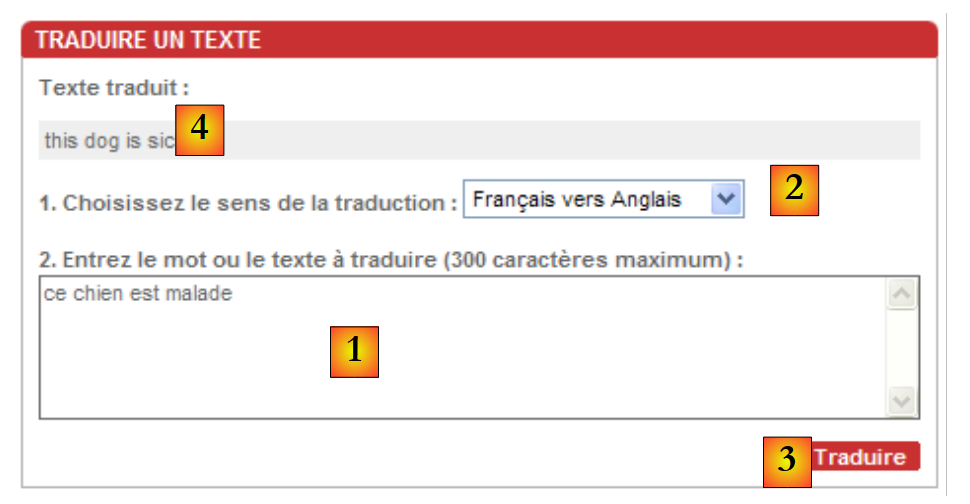 | 待翻译的文本插入到 [1] 中，翻译方向在 [2] 中选择。通过 [3] 发起翻译请求，并在 [4] 中获取翻译结果。 |
我们将编写一个作为上述应用程序客户端的Windows应用程序。它除了执行[trans.voila.fr]网站应用程序的功能外，不会做其他任何事情。其界面如下：
 |
11.7.3.2. 应用程序架构
该应用程序将采用以下两层架构：
 |
11.7.3.3. Visual Studio 项目
Visual Studio 项目结构如下：
 |
- 在 [1] 中，该解决方案由两个项目组成，
- [2]：一个用于 [dao] 层及其使用的实体，
- [3]：另一个用于 Windows 界面
11.7.3.4. 项目 [dao]
项目 [dao] 由以下部分组成：
- IServiceTraduction.cs：面向 [ui] 层的接口
- ServiceTraduction：该接口的实现
- WebTraductionsException：应用程序特有的异常
IServiceTraduction 接口如下：
using System.Collections.Generic;
namespace dao {
public interface IServiceTraduction {
// 使用的语言
IDictionary<string, string> LanguesTraduites { get; }
// 翻译
string Traduire(string texte, string deQuoiVersQuoi);
}
}
- 第 6 行：属性 LanguesTraduites 返回翻译服务器支持的语言词典。 该词典的条目形式为 ["fe","Français-Anglais"]，其中值表示翻译方向（此处为法语译为英语），而键“fe”是 trans.voila.fr 翻译服务器使用的代码。
- 第 8 行：方法 Traduire 是翻译方法：
- texte 是待翻译的文本
- deQuoiVersQuoi 是目标语言词典中的一个键
- 该方法负责文本的翻译
ServiceTraduction 是接口 IServiceTraduction 的实现类。我们将在下一节中详细说明。
WebTraductionsException 是以下异常类：
using System;
namespace entites {
public class WebTraductionsException : Exception {
// 错误代码
public int Code { get; set; }
// 制造商
public WebTraductionsException() {
}
public WebTraductionsException(string message)
: base(message) {
}
public WebTraductionsException(string message, Exception e)
: base(message, e) {
}
}
}
- 第 7 行：一个错误代码
11.7.3.5. Web 客户端 [ServiceTraduction]
让我们回顾一下应用程序的架构：
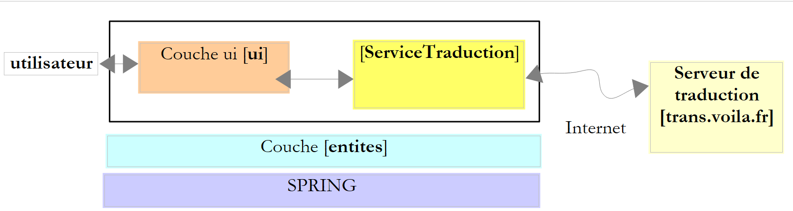 |
我们需要编写的 [ServiceTraduction] 类是 [trans.voila.fr] 翻译 Web 服务的客户端。要编写它，我们需要理解
- 翻译服务器对其客户端的期望
- 服务器会向客户端返回什么
让我们通过一个示例来看看翻译过程中客户端与服务器之间的交互。让我们回顾一下应用程序介绍中提到的示例：
 | 待翻译的文本插入到[1]中，翻译方向在[2]中选定。翻译请求由[3]发起，并在[4]中获得。 |
为了获取翻译结果 [4]，浏览器发送了以下请求 GET（显示在其地址栏中）：
该请求非常容易理解：
- http://trans.voila.fr/traduction_voila.php 是翻译服务的 URL
- isText=1 似乎表示处理的是文本
- translationDirection 指代翻译方向，此处为 Français-Anglais
- stext 是待翻译的文本，采用所谓的 URL 编码形式。因为某些字符不能直接出现在 URL 中。例如空格，在此处被编码为 +。 .Net 框架提供了静态方法 System.Web.HttpUtility.UrlEncode 来完成这项编码工作。
由此可知，在向翻译服务器发起请求时，我们的 [ServiceTraduction] 类可以使用字符串
，其中标记 {0} 和 {1} 将分别被替换为翻译方向和待翻译的文本。
如何得知服务器支持哪些翻译方向？在上方的屏幕截图中，可选的翻译语言位于下拉列表中。若在浏览器中查看（视图 / 源代码）该页面的 HTML 代码，会发现下拉列表对应的代码如下：
这并不是一段非常规范的HTML代码，因为每个<option>标签通常都应由</option>标签闭合。话虽如此，value属性为我们提供了应发送至服务器的翻译代码列表。 在接口 IServiceTraduction 的词典 LanguesTraduites 中，键即为上述 value 属性，值则是下拉列表中显示的文本。
现在让我们通过（查看 / 源代码）查看翻译服务器返回的翻译在 HTML 页面中的位置：
翻译内容位于返回的 HTML 页面正中间。如何找到它？ 我们可以使用正则表达式匹配 <div class="txtTrad">...</div> 这一序列，因为 <div class="txtTrad"> 标签仅出现在 HTML 页面的此处。用于提取翻译文本的 C# 正则表达式如下：
现在，我们已具备编写接口 IServiceTraduction 的实现类 ServiceTraduction 的条件：
using System;
using System.Collections.Generic;
using System.IO;
using System.Net;
using System.Text.RegularExpressions;
using System.Web;
using entites;
namespace dao {
public class ServiceTraduction : IServiceTraduction {
// 服务的自动配置属性
public IDictionary<string, string> LanguesTraduites { get; set; }
public string UrlServeurTraduction { get; set; }
public string ProxyHttp { get; set; }
public String RegexTraduction { get; set; }
// 翻译
public string Traduire(string texte, string deQuoiVersQuoi) {
// 所请求的翻译是否可行？
if (!LanguesTraduites.ContainsKey(deQuoiVersQuoi)) {
throw new WebTraductionsException(String.Format("Le sens de traduction [{0}] n'est pas reconnu")) { Code = 10 };
}
// 待翻译文本
string texteATraduire = HttpUtility.UrlEncode(texte);
// 要请求的 URI
string uri = string.Format(UrlServeurTraduction, deQuoiVersQuoi, texteATraduire);
// 用于在响应中查找翻译的正则表达式
Regex patternTraduction = new Regex(RegexTraduction);
// 异常
WebTraductionsException exception = null;
// 翻译
string traduction = null;
try {
// 配置请求
HttpWebRequest httpWebRequest = WebRequest.Create(uri) as HttpWebRequest;
httpWebRequest.Method = "GET";
httpWebRequest.Proxy = ProxyHttp == null ? null : new WebProxy(ProxyHttp); ;
// 执行请求
HttpWebResponse httpWebResponse = httpWebRequest.GetResponse() as HttpWebResponse;
// 文档
using (Stream stream = httpWebResponse.GetResponseStream()) {
using (StreamReader reader = new StreamReader(stream)) {
bool traductionTrouvée = false;
string ligne = null;
while (!traductionTrouvée && (ligne = reader.ReadLine()) != null) {
// 在当前行中搜索翻译
MatchCollection résultats = patternTraduction.Matches(ligne);
// 找到翻译了吗？
if (résultats.Count != 0) {
traduction = résultats[0].Groups[1].Value.Trim();
traductionTrouvée = true;
}
}
// 找到翻译了吗？
if (!traductionTrouvée) {
exception = new WebTraductionsException("Le serveur n'a pas renvoyé de réponse") { Code = 12 };
}
}
}
} catch (Exception e) {
exception = new WebTraductionsException("Erreur rencontrée lors de la traduction", e) { Code = 11 };
}
// 异常？
if (exception != null) {
throw exception;
} else {
return traduction;
}
}
}
}
- 第 12 行：接口 IServiceTraduction 的属性 LanguesTraduites——由外部初始化
- 第 13 行：属性 UrlServeurTraduction 是向翻译服务器请求的 URL：http://trans.voila.fr/traduction_voila.php?isText=1&translationDirection={0}&stext={1}，其中标记 {0} 应替换为翻译方向，标记 {1} 应替换为待翻译文本 - 由外部初始化
- 第 14 行：属性 ProxyHttp 表示要使用的 HTTP 代理（如有），例如：pproxy.istia.uang:3128 - 由外部初始化
- 第 15 行：属性 RegexTraduction 是用于从翻译服务器返回的 HTML 流中提取翻译内容的正则表达式，例如 @"<div class=""txtTrad"">(.*?)</div>" - 由外部初始化
- 在我们的应用程序中，这四个属性将由 Spring 进行初始化。
- 第20-22行：验证所请求的翻译方向是否确实存在于已翻译语言的词典中。如果不存在，则抛出异常。
- 第 24 行：对待翻译的文本进行编码，以便将其作为 URL 的一部分
- 第26行：构建翻译服务的URI。如果属性UrlServeurTraduction是字符串http://trans.voila.fr/traduction_voila.php?isText=1&translationDirection={0}&stext={1}，则标记 {0} 将被替换为翻译结果，标记 {1} 将被替换为待翻译文本。
- 第 28 行：构建了在翻译服务器的 HTML 响应中搜索翻译的模板。
- 第 33、60 行：向翻译服务器发送查询的操作在 try/catch 块中进行
- 第 35 行：使用请求文档的 Uri 构建了用于查询翻译服务器的 HttpWebRequest 对象。
- 第 36 行：查询方法为 GET。该语句其实可以省略，因为 GET 很可能是 HttpWebRequest 对象的默认方法。
- 第37行：设置对象HttpWebRequest的属性Proxy。
- 第39行：向翻译服务器发送请求，并获取其响应，响应类型为HttpWebResponse。
- 第41-42行：使用StreamReader读取服务器HTML响应的每一行。
- 第 45-53 行：在响应的每一行中搜索翻译。一旦找到，便停止读取 HTML 响应并关闭所有已打开的流。
- 第55-57行：若在HTML响应中未找到翻译，则准备一个类型为WebTraductionsException的异常来报告此情况。
- 第 60-62 行：如果客户端/服务器通信过程中发生了异常，将其封装为类型为 WebTraductionsException 的异常以进行报告。
- 第 64-68 行：如果已记录异常，则抛出该异常；否则返回找到的翻译。
本示例假设HTTP代理无需身份验证。若非如此，则需编写类似以下代码：
httpWebRequest.Proxy = ProxyHttp == null ? null : new WebProxy(ProxyHttp); ;
httpWebRequest.Proxy.Credentials=new NetworkCredential("login","password");
此处我们使用 WebRequest / WebResponse 而非 WebClient，是因为我们无需处理翻译服务器返回的完整 HTML 响应。 一旦在该响应中找到翻译内容，我们就不再需要响应中的其余行。而类 WebClient 无法实现这一点。
以下是 ServiceTraduction 类的测试程序：
using System;
using System.Collections.Generic;
using dao;
using entites;
namespace ui {
class Program {
static void Main(string[] args) {
try {
// 创建翻译服务
ServiceTraduction serviceTraduction = new ServiceTraduction();
// 用于查找翻译的正则表达式
serviceTraduction.RegexTraduction = @"<div class=""txtTrad"">(.*?)</div>";
// 翻译服务器网址
serviceTraduction.UrlServeurTraduction = "http://trans.voila.fr/traduction_voila.php?isText=1&translationDirection={0}&stext={1}";
// 已翻译语言词典
Dictionary<string, string> languesTraduites = new Dictionary<string, string>();
languesTraduites["fe"]= "Français-Anglais";
languesTraduites["fs"]= "Français-Espagnol";
languesTraduites["ef"]= "Anglais-Français";
serviceTraduction.LanguesTraduites = languesTraduites;
// 代理
//serviceTraduction.ProxyHttp = "pproxy.istia.uang:3128";
// 翻译
string texte = "ce chien est perdu";
string deQuoiVersQuoi = "fe";
Console.WriteLine("Traduction [{0}] de [{1}] : [{2}]", languesTraduites[deQuoiVersQuoi], texte, serviceTraduction.Traduire(texte, deQuoiVersQuoi));
texte = "l'été sera chaud";
deQuoiVersQuoi = "fs";
Console.WriteLine("Traduction [{0}] de [{1}] : [{2}]", languesTraduites[deQuoiVersQuoi], texte, serviceTraduction.Traduire(texte, deQuoiVersQuoi));
texte = "my tailor is rich";
deQuoiVersQuoi = "ef";
Console.WriteLine("Traduction [{0}] de [{1}] : [{2}]", languesTraduites[deQuoiVersQuoi], texte, serviceTraduction.Traduire(texte, deQuoiVersQuoi));
texte = "xx";
deQuoiVersQuoi = "ef";
Console.WriteLine("Traduction [{0}] de [{1}] : [{2}]", languesTraduites[deQuoiVersQuoi], texte, serviceTraduction.Traduire(texte, deQuoiVersQuoi));
} catch (WebTraductionsException e) {
// 错误
Console.WriteLine("L'erreur suivante de code {1} s'est produite : {0}", e.Message, e.Code);
}
}
}
}
所得结果如下：
该解决方案中的 [dao] 项目编译为 DLL 和 HttpTraductions.dll：
 |
11.7.3.6. 应用程序的图形界面
让我们回顾一下应用程序的架构：
 |
现在我们编写 [ui] 层。该层是正在构建的解决方案中 [ui] 项目的对象：
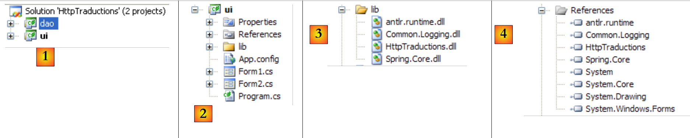 |
文件夹 [lib] [3] 包含项目 [4] 所引用的部分 DLL：
- Spring 所需的文件：Spring.Core、Common.Logging、antlr.runtime
- [dao] 层所需的文件：HttpTraductions
文件 [App.config] 包含 Spring 配置：
<?xml version="1.0" encoding="utf-8" ?>
<configuration>
<configSections>
<sectionGroup name="spring">
<section name="context" type="Spring.Context.Support.ContextHandler, Spring.Core" />
<section name="objects" type="Spring.Context.Support.DefaultSectionHandler, Spring.Core" />
</sectionGroup>
</configSections>
<spring>
<context>
<resource uri="config://spring/objects" />
</context>
<objects xmlns="http://www.springframework.net">
<description>Traductions sur le web</description>
<!-- 翻译服务 -->
<object name="ServiceTraduction" type="dao.ServiceTraduction, HttpTraductions">
<property name="UrlServeurTraduction" value="http://trans.voila.fr/traduction_voila.php?isText=1&translationDirection={0}&stext={1}"/>
<!--
<property name="ProxyHttp" value="pproxy.istia.uang:3128"/>
-->
<property name="RegexTraduction" value="<div class="txtTrad">(.*?)</div>"/>
<property name="LanguesTraduites">
<dictionary key-type="string" value-type="string">
<entry key="fe" value="Français-Anglais"/>
<entry key="ef" value="Anglais-Français"/>
...
<entry key="ei" value="Anglais-Italien"/>
<entry key="ie" value="Italien-Anglais"/>
</dictionary>
</property>
</object>
</objects>
</spring>
</configuration>
- 第 15 行：Spring 需实例化的对象。仅有一个，即第 18 行中使用 DLL 和 HttpTraductions 中找到的 ServiceTraduction 类来实例化翻译服务。
- 第19行：ServiceTraduction类的UrlServeurTraduction属性。 URL 中的 & 字符存在处理难题。该字符在 XML 文件中具有特殊含义，因此必须进行转义。文件后续部分中出现的其他字符也需进行同样的处理。这些字符应替换为 [&code;] 序列： & 替换为 [&]，< 替换为 [<]，> 替换为 [>]，" 替换为 ["]。
- 第 21 行：类 ServiceTraduction 的属性 ProxyHttp。null 属性尚未初始化。不定义该属性即表示不存在 Http 代理。
- 第 23 行：类 ServiceTraduction 的属性 RegexTraduction。在正则表达式中，必须将字符 [< > "] 替换为它们的受保护等价形式。
- 第 24-33 行：类 ServiceTraduction 的属性 LanguesTraduites。
程序 [Program.cs] 在应用程序启动时执行。其代码如下：
using System;
using System.Text;
using System.Windows.Forms;
using dao;
using Spring.Context;
using Spring.Context.Support;
namespace ui {
static class Program {
/// <summary>
/// 应用程序的主入口点。
/// </summary>
[STAThread]
static void Main() {
Application.EnableVisualStyles();
Application.SetCompatibleTextRenderingDefault(false);
// --------------- 开发者代码
// 翻译服务实例化
IApplicationContext ctx = null;
Exception ex = null;
ServiceTraduction serviceTraduction = null;
try {
// Spring 上下文
ctx = ContextRegistry.GetContext();
// 请求翻译服务引用
serviceTraduction = ctx.GetObject("ServiceTraduction") as ServiceTraduction;
} catch (Exception e1) {
// 记录异常
ex = e1;
}
// 待显示的表单
Form form = null;
// 是否发生了异常？
if (ex != null) {
// 是 - 创建要显示的错误消息
StringBuilder msgErreur = new StringBuilder(String.Format("Chaîne des exceptions : {0}{1}", "".PadLeft(40, '-'), Environment.NewLine));
Exception e = ex;
while (e != null) {
msgErreur.Append(String.Format("{0}: {1}{2}", e.GetType().FullName, e.Message, Environment.NewLine));
msgErreur.Append(String.Format("{0}{1}", "".PadLeft(40, '-'), Environment.NewLine));
e = e.InnerException;
}
// 创建错误窗口，并将待显示的错误信息传递给该窗口
Form2 form2 = new Form2();
form2.MsgErreur = msgErreur.ToString();
// 这将是待显示的窗口
form = form2;
} else {
// 一切顺利
// 创建图形界面 [Form1]，并将翻译服务的引用传递给该界面
Form1 form1 = new Form1();
form1.ServiceTraduction = serviceTraduction;
// 这将是待显示的窗口
form = form1;
}
// 显示窗口
Application.Run(form);
}
}
}
该代码已在第 6 版“税收”应用程序的第 7.6.2 节中使用过。
- Spring 在第 27 行创建了翻译服务。若创建成功，将显示表单 [Form1]（第 52-55 行）；否则将显示错误表单 [Form2]（第 36-48 行）。
表单 [Form2] 是“税务”应用程序第 6 版中使用的表单，已在第 7.6.4 节中进行过说明。
表单 [Form1] 如下所示：
 |
编号 | 型号 | 名称 | 角色 |
1 | TextBox | textBoxTexteATraduire | 待翻译文本输入框 MultiLine=true |
2 | ComboBox | comboBoxLangues | 翻译方向列表 |
3 | Button | buttonTraduire | 请求将文本 [1] 翻译为 [2] |
4 | TextBox | textBoxTraduction | 文本 [1] 的翻译 |
表单代码 [Form1] 如下：
using System;
using System.Collections.Generic;
using System.Linq;
using System.Windows.Forms;
using dao;
namespace ui {
public partial class Form1 : Form {
// 翻译服务
public ServiceTraduction ServiceTraduction { get; set; }
// 语言词典
Dictionary<string, string> languesInversées = new Dictionary<string, string>();
// 生成器
public Form1() {
InitializeComponent();
}
// 表单初始加载
private void Form1_Load(object sender, EventArgs e) {
// 语言反向词典构建
foreach (string code in ServiceTraduction.LanguesTraduites.Keys) {
// 语言
string langues = ServiceTraduction.LanguesTraduites[code];
// 向反向词典添加（语言、代码）
languesInversées[langues] = code;
}
// 按语言字母顺序填充下拉列表
string[] languesCombo = languesInversées.Keys.ToArray();
Array.Sort<string>(languesCombo);
foreach (string langue in languesCombo) {
comboBoxLangues.Items.Add(langue);
}
// 选择第一语言
if (comboBoxLangues.Items.Count != 0) {
comboBoxLangues.SelectedIndex = 0;
}
}
private void buttonTraduire_Click(object sender, EventArgs e) {
// 有什么需要翻译的吗？
string texte = textBoxTexteATraduire.Text.Trim();
if (texte == "") return;
// 翻译
try {
textBoxTraduction.Text = ServiceTraduction.Traduire(texte, languesInversées[comboBoxLangues.SelectedItem.ToString()]);
} catch (Exception ex) {
textBoxTraduction.Text = ex.Message;
}
}
}
}
- 第 10 行：关于翻译服务的引用。 该公共属性由 [Program.cs]（第 53 行）初始化。因此，当方法 Form1_Load（第 20 行）或 buttonTraduire_Click（第 40 行）执行时，该字段已初始化。
- 第 12 行：包含 ["Français-Anglais","fe"]、c.a.d 类型条目的已翻译语言字典。该字典是翻译服务返回的 LanguesTraduites 字典的逆向映射。
- 第20行：在加载表单时，Form1_Load方法被调用。
- 第22-27行：使用词典serviceTraduction.LanguesTraduites和["fe","Français-Anglais"]来构建词典languesInversées和["Français-Anglais", "fe"]。
- 第29行：languesCombo是字典languesInversées、c.a.d的键表。一个包含元素["Français-Anglais"]的数组
- 第 30 行：该数组已按字母顺序排序，以便在下拉列表中按字母顺序显示翻译方向
- 第 31-33 行：语言下拉列表已填充。
- 第 40 行：用户点击按钮时执行的方法 [Traduire]
- 第 46 行：只需调用方法 serviceTraduction.Traduire 即可请求翻译。第一个参数是待翻译的文本，第二个参数是翻译方向的代码。该代码通过语言下拉列表中选定的项，从词典 languesInversées 中获取。
- 第48行：如果发生异常，则显示异常信息代替翻译结果。
11.7.3.7. Conclusion
该应用程序表明，.NET框架的Web客户端使我们能够利用Web资源。每次的技术实现都类似：
- 确定要查询的 URI。该 URI 通常带有参数。
- 进行查询
- 利用正则表达式在服务器响应中查找所需内容
这种技术具有不确定性。事实上，随着时间的推移，被查询的 URI 或用于查找预期结果的正则表达式可能会发生变化。因此，将这两项信息存放在配置文件中更为明智。但这可能还不够。我们将在下一章中看到，Web 上存在更稳定的资源：Web 服务。
11.7.4. 一个 SMTP 客户端（简单邮件传输协议）与 SmtpClient 类
SMTP客户端是SMTP邮件发送服务器的客户端。类.NET SmtpClient完全封装了此类客户端的需求。 开发人员无需了解 SMTP 协议的细节。我们了解该协议，其已在第 11.4.3 节中介绍。
我们将通过一个基本的 Windows 应用程序来介绍 SmtpClient 类，该应用程序支持发送带附件的电子邮件。该应用程序将连接到 SMTP 服务器的 25 号端口。 需要提醒的是，在大多数 Windows 系统中，防火墙或其他杀毒软件会阻止对 25 号端口的连接。因此，为了测试该应用程序，必须禁用此类保护：
 |
该SMTP客户端将采用单层架构：
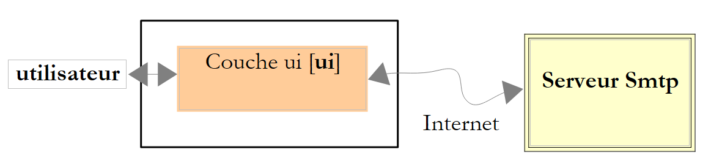 |
Visual Studio 项目如下：
 |
该应用程序的图形界面如下所示：
 |
编号 | 类型 | 名称 | 角色 |
1 | TextBox | textBoxServeur | 要连接的服务器名称 SMTP |
2 | NumericUpDown | numericUpDownPort | 要连接的端口 |
3 | TextBox | textBoxExpediteur | 消息发件人地址 |
4 | TextBox | textBoxTo | 收件人地址格式为：地址1,地址2, ... |
5 | TextBox | textBoxCc | 抄送收件人的地址（CC=Carbon Copy）格式为：地址1,地址2, ... |
6 | TextBox | textBoxBcc | 密件抄送（BCC=Blind Carbon Copy）收件人地址，格式为：地址1,地址2, ...这三个输入字段中的所有地址都将收到包含相同附件的同一封邮件。 邮件收件人可以查看第4和第5字段中的地址，但无法查看第6字段中的地址。因此，密件抄送（Bcc）是一种在不让其他收件人知晓的情况下将某人添加为抄送对象的方式。 |
7 | 按钮 | buttonAjouter | 向邮件添加附件 |
8 | ListBox | listBoxPiecesJointes | 邮件附件清单 |
9 | TextBox | textBoxSujet | 信件主题 |
10 | TextBox | textBoxMessage | 邮件正文。 MultiLine=true |
11 | Button | buttonEnvoyer | 用于发送消息及可能的附件 |
12 | TextBox | textBoxRésultat | 显示已发送消息的摘要，若遇到问题则显示错误信息 |
13 | 按钮 | buttonEffacer | 用于清除[12] |
OpenfileDialog | openFileDialog1 | 非可视化控件，允许在本地文件系统中选择附件 |
在上例中，[12] 显示的摘要如下：
Envoi réussi...
Sujet : votre demande
Destinataires : y2000@hotmail.com
Cc :
Bcc :
Pièces jointes :
C:\data\travail\2007-2008\recrutements 0809\ing3\documents\ing3.zip
Texte : Bonjour,
Vous trouverez ci-joint le dossier de candidature à l'ISTIA.
Cordialement,
ST
表单代码 [SendMailForm.cs] 如下：
using System;
using System.Windows.Forms;
using System.Net.Mail;
using System.Text.RegularExpressions;
using System.Text;
namespace Chap9 {
public partial class SendMailForm : Form {
public SendMailForm() {
InitializeComponent();
}
// 添加附件
private void buttonAjouter_Click(object sender, EventArgs e) {
// 设置对话框openfileDialog1
openFileDialog1.InitialDirectory = Application.ExecutablePath;
openFileDialog1.Filter = "Tous les fichiers (*.*)|*.*";
openFileDialog1.FilterIndex = 0;
openFileDialog1.FileName = "";
// 显示对话框并获取其结果
if (openFileDialog1.ShowDialog() == DialogResult.OK) {
// 获取文件名
listBoxPiecesJointes.Items.Add(openFileDialog1.FileName);
}
}
private void textBoxServeur_TextChanged(object sender, EventArgs e) {
setStatutEnvoyer();
}
private void setStatutEnvoyer() {
buttonEnvoyer.Enabled = textBoxServeur.Text.Trim() != "" && textBoxTo.Text.Trim() != "" && textBoxSujet.Text.Trim() != "";
}
// 移除附件
private void buttonRetirer_Click(object sender, EventArgs e) {
// 是否已选中附件？
if (listBoxPiecesJointes.SelectedIndex != -1) {
// 将其移除
listBoxPiecesJointes.Items.RemoveAt(listBoxPiecesJointes.SelectedIndex);
// 更新“删除”按钮
buttonRetirer.Enabled = listBoxPiecesJointes.Items.Count != 0;
}
}
private void listBoxPiecesJointes_SelectedIndexChanged(object sender, EventArgs e) {
// 已选中附件？
if (listBoxPiecesJointes.SelectedIndex != -1) {
// 更新“移除”按钮
buttonRetirer.Enabled = true;
}
}
// 发送带附件的消息
private void buttonEnvoyer_Click(object sender, EventArgs e) {
....
}
private void textBoxTo_TextChanged(object sender, EventArgs e) {
setStatutEnvoyer();
}
private void textBoxSujet_TextChanged(object sender, EventArgs e) {
setStatutEnvoyer();
}
private void buttonEffacer_Click(object sender, EventArgs e) {
textBoxResultat.Text = "";
}
}
}
该代码没有新内容，因此我们不再赘述。要理解第14行中的方法buttonAjouter_Click，请读者重读第7.5.1节。
第55行用于发送邮件的buttonEnvoyer_Click方法如下：
private void buttonEnvoyer_Click(object sender, EventArgs e) {
try {
// 沙漏
Cursor = Cursors.WaitCursor;
// SMTP 客户端
SmtpClient smtpClient = new SmtpClient(textBoxServeur.Text.Trim(), (int)numericUpDownPort.Value);
// 邮件
MailMessage message = new MailMessage();
// 发件人
message.Sender = new MailAddress(textBoxExpéditeur.Text.Trim());
message.From = message.Sender;
// 收件人
Regex marqueur = new Regex("\\s*,\\s*");
string[] destinataires = marqueur.Split(textBoxTo.Text.Trim());
foreach (string destinataire in destinataires) {
if (destinataire.Trim() != "") {
message.To.Add(new MailAddress(destinataire));
}
}
// CC
string[] copies = marqueur.Split(textBoxCc.Text.Trim());
foreach (string copie in copies) {
if (copie.Trim() != "") {
message.CC.Add(new MailAddress(copie));
}
}
// BCC
string[] blindCopies = marqueur.Split(textBoxBcc.Text.Trim());
foreach (string blindCopie in blindCopies) {
if (blindCopie.Trim() != "") {
message.Bcc.Add(new MailAddress(blindCopie));
}
}
// 主题
message.Subject = textBoxSujet.Text.Trim();
// 邮件正文
message.Body = textBoxMessage.Text;
// 附件
foreach (string attachement in listBoxPiecesJointes.Items) {
message.Attachments.Add(new Attachment(attachement));
}
// 发送消息
smtpClient.Send(message);
// 确定 - 显示摘要
StringBuilder msg = new StringBuilder(String.Format("Envoi réussi...{0}", Environment.NewLine));
msg.Append(String.Format("Sujet : {0}{1}", textBoxSujet.Text.Trim(), Environment.NewLine));
textBoxSujet.Clear();
msg.Append(String.Format("Destinataires : {0}{1}", textBoxTo.Text.Trim(), Environment.NewLine));
textBoxTo.Clear();
msg.Append(String.Format("Cc : {0}{1}", textBoxCc.Text.Trim(), Environment.NewLine));
textBoxCc.Clear();
msg.Append(String.Format("Bcc : {0}{1}", textBoxBcc.Text.Trim(), Environment.NewLine));
textBoxBcc.Clear();
msg.Append(String.Format("Pièces jointes :{0}", Environment.NewLine));
foreach (string attachement in listBoxPiecesJointes.Items) {
msg.Append(String.Format("{0}{1}", attachement, Environment.NewLine));
}
msg.Append(String.Format("Texte : {0}{1}", textBoxMessage.Text, Environment.NewLine));
listBoxPiecesJointes.Items.Clear();
textBoxResultat.Text = msg.ToString();
} catch (Exception ex) {
// 显示错误
textBoxResultat.Text = String.Format("L'erreur suivante s'est produite {0}", ex);
}
// 普通光标
Cursor = Cursors.Arrow;
}
- 第6行：创建SMTP客户端。它需要两个参数：服务器名称SMTP及其运行端口
- 第8行：创建类型为MailMessage的消息。该消息将封装待发送的全部内容。
- 第10行：填写发件人的Sender电子邮件地址。电子邮件地址是基于字符串“xx@yy.zz”构建的MailAddress类型的实例。 该字符串必须符合电子邮件地址的预期格式，否则将抛出异常。此时，该字符串将以不太友好的形式显示在字段 textBoxResultat（第 63 行）中。
- 第 13-19 行：将收件人的电子邮件地址放入邮件的“收件人”列表中。这些地址从字段 textBoxTo 中获取。第 13 行的正则表达式用于提取以逗号分隔的各个地址。
- 第21-26行：重复相同流程，将字段CC的值初始化为字段textBoxCc中的抄送地址。
- 第28-33行：重复相同的过程，将消息的“密件抄送”字段初始化为字段textBoxBcc中的密件抄送地址。
- 第 35 行：将消息的 Subject 字段初始化为字段 textBoxSujet 的主题。
- 第 37 行：将消息的 Body 字段初始化为消息 textBoxMessage 的正文内容。
- 第 39-41 行：将附件附加到邮件中。每个附件都作为 Attachment 对象添加到邮件的 Attachments 字段中。Attachment 对象是根据本地文件系统中待附加文件的完整路径实例化生成的。
- 第 43 行：使用 Smtp 客户端的 Send 方法发送消息。
- 第 45-60 行：将发送摘要写入字段 textBoxResultat，并重置表单。
- 第 63 行：显示可能出现的错误
11.8. 一个通用的异步 TCP 客户端
11.8.1. 概述
在本章的所有示例中，客户端与服务器的通信均采用阻塞模式，也称为同步模式：
- 当客户端连接到服务器时，它会等待服务器对该请求的响应，然后才继续。
- 当客户端读取服务器发送的一行文本时，在服务器发送该行之前，客户端会被阻塞。
- 在服务器端，负责为客户提供服务的线程也以同样的方式运行。
在图形用户界面中，通常需要避免因耗时操作而阻塞用户。常被提及的例子是下载大文件。在下载过程中，必须允许用户继续与图形用户界面进行交互。
在此，我们建议重写第11.6.3节中的通用TCP客户端，并进行以下修改：
- 采用图形化界面
- 与服务器通信的工具将是一个 Socket 对象
- 通信模式为异步：
- 客户端将向服务器发起连接，但不会因等待连接建立而阻塞
- 客户端将向服务器发起数据发送，但不会阻塞等待发送完成
- 客户端将发起接收来自服务器的数据，但不会阻塞等待接收结束。
回顾一下 Socket 对象在 TCP 客户端/服务器通信中的位置：
 |
Socket 类是操作最接近网络的类。它允许对网络连接进行精细管理。 术语 socket 原本指代电源插座。该术语已被扩展，用于指代软件网络接口。在机器 A 和 B 之间的 TCP-IP 通信中，实际上是两个 sockets 相互通信。 应用程序可直接与 sockets 进行交互。如上文中的应用程序 A 所示。套接字可以是 client 或 serveur 类型。
11.8.2. 异步 TCP 客户端的图形界面
Visual Studio 应用程序如下：
 |
[ClientTcpAsynchrone.cs] 是图形界面。该界面如下所示：
 |
编号 | 类型 | 名称 | 角色 |
1 | TextBox | textBoxNomServeur | 要连接的 TCP 服务器名称 |
2 | NumericUpDown | numericUpDownPortServeur | 要连接的端口 |
3 | RadioButton | radioButtonLF radioButtonRCLF | 用于指定客户端应使用的换行符：LF "\n" 或 RCLF "\r\n" |
4 | 按钮 | buttonConnexion | 用于连接服务器 [1] 的端口 [2]。 当客户端未连接到服务器时，按钮的标签为 [Connecter]；当连接时，标签为 [Déconnecter]。 |
5 | TextBox | textBoxMsgToServeur | 连接建立后发送给服务器的消息。当用户按下[Entrée]键时，该消息将连同在[3]中选定的换行符一起发送 |
6 | ListBox | listBoxEvts | 显示客户端/服务器连接主要事件的列表：连接、断开、关闭数据流、通信错误 |
7 | ListBox | listBoxDialogue | 显示客户端/服务器对话消息的列表 |
8 | 按钮 | buttonRazEvts | 用于清除列表[6] |
4 | 按钮 | buttonRazDialogue | 用于清除列表 [7] |
该接口的工作原理如下：
- 用户通过 [1, 2, 3, 4] 将图形化 TCP 客户端连接到 TCP 服务。
- 一个异步线程会持续接收 TCP 服务器发送的所有数据，并将其显示在列表 [7] 中。该线程与接口的其他活动相互独立。
- 用户可通过 [5] 按自己的节奏向服务器发送消息。每条消息均由一个异步线程发送。与永不停歇的接收线程不同，发送线程在消息发送完成后即告结束。下一条消息将使用新的异步线程。
- 当任一方关闭连接时，客户端与服务器的通信即告结束。用户可通过按钮 [4] 发起此操作，该按钮在建立连接后将显示为 [Déconnecter]。
以下是运行时的屏幕截图：
 |
- 在 [1] 中：连接到 POP 服务
- 在 [2]：显示连接过程中发生的事件
- 在 [3] 中：连接完成后由服务器 POP 发送的消息
- 在 [4]：按钮 [Connecter] 已变为按钮 [Déconnecter]
 |
- 在 [1] 时，向服务器 POP 发送了命令 quit。服务器响应 +OK goodbye 并关闭了连接
- 在 [2] 中，检测到了服务器端的关闭操作。随后客户端也关闭了连接。
- 在 [3] 时，按钮 [Déconnecter] 恢复为按钮 [Connecter]
11.8.3. 与服务器的异步连接
点击按钮 [Connecter] 将触发以下方法的执行：
private void buttonConnexion_Click(object sender, EventArgs e) {
// 登录或注销？
if (buttonConnexion.Text == "Déconnecter")
déconnexion();
else
connexion();
}
- 第 3 行：该按钮的标签可以是 [Connecter] 或 [Déconnecter]。
连接方法如下：
using System.Net.Sockets;
...
namespace Chap9 {
public partial class ClientTcp : Form {
const int tailleBuffer = 1024;
private Socket client = null;
private byte[] data = new byte[tailleBuffer];
private string réponse = null;
private string finLigne = "\r\n";
// 代理
public delegate void writeLog(string log);
public ClientTcp() {
InitializeComponent();
}
....................................
private void connexion() {
// 数据验证
string nomServeur = textBoxNomServeur.Text.Trim();
if (nomServeur == "") {
logEvent("indiquez le nom du serveur");
return;
}
// 跟踪
logEvent(String.Format("connexion en cours au serveur {0}", nomServeur));
try {
// 创建套接字
client = new Socket(AddressFamily.InterNetwork, SocketType.Stream, ProtocolType.Tcp);
// 异步连接
client.BeginConnect(Dns.GetHostEntry(nomServeur).AddressList[0],(int)numericUpDownPortServeur.Value, connecté, client);
} catch (Exception ex) {
logEvent(String.Format("erreur de connexion : {0}", ex.Message));
return;
}
}
// 连接成功
private void connecté(IAsyncResult résultat) {
// 获取客户端套接字
Socket client = résultat.AsyncState as Socket;
...
}
// 进程跟踪
private void logEvent(string msg) {
....
}
}
}
- 第 1 行：Socket 类属于命名空间 System.Net.Sockets。
表单中的若干方法需要共享以下数据：
- 第 7 行：client 是与服务器通信的套接字
- 第 6 行和第 8 行：客户端将通过数据字节数组 data 接收消息。
- 第 9 行：response 是服务器发送的响应。
- 第 10 行：finLigne 是 TCP 客户端使用的行结束标记——默认初始化为 RCLF，但用户可通过单选按钮 [3] 进行修改。
第19行的connexion过程用于连接TCP服务器：
- 第21-25行：验证服务器名称是否为空。若非如此，则通过第49行的logEvent方法将该事件记录在listBoxEvts中。
- 第27行：报告即将建立连接
- 第 30 行：创建 TCP-IP 通信所需的 Socket 对象。构造函数接受三个参数：
- AddressFamily addressFamily：客户端和服务器地址的地址族 IP，此处为 IPv4 (AddressFamily.InterNetwork)
- SocketType socketType：套接字类型。SocketType.Stream 类型适用于 TCP/IP 连接
- ProtocolType protocolType：使用的互联网协议类型，此处为TCP协议
- 第32行：连接以异步方式建立。连接已启动，但程序执行不会等待其完成。方法 [Socket].BeginConnect 接受四个参数：
- IPAddress ipAddress：运行目标服务的主机的 IP 地址
- Int32 port：服务的端口
- AsyncCallBack asyncCallBack：AsyncCallBack 是一个委托类型：
作为 BeginConnect 方法第三个参数传递的 asyncCallBack 方法，必须是一个接受 IAsyncCallBack 类型且不返回任何结果的方法。该方法将在连接建立后被调用。 在此，我们将第41行中的方法 connecté 作为第三个参数传递。
- （续）
- 对象 state：一个要传递给方法 asyncCallBack 的对象。该方法接收（参见上文委托）一个类型为 IAsyncResult 的参数 ar。 对象 state 可在 ar.AsyncState（第 43 行）中获取。此处我们将客户端的套接字作为第 4 个参数传递。
- 第38行：方法结束。用户可以再次与图形界面交互。连接在后台进行，与图形界面的事件处理并行。同样在后台，无论连接成功与否，第41行的方法 connecté 都将在连接结束时被调用。
方法 connecté 的代码如下：
// 连接已建立
private void connecté(IAsyncResult résultat) {
// 获取客户端套接字
Socket client = résultat.AsyncState as Socket;
try {
// 结束异步操作
client.EndConnect(résultat);
// 跟踪
logEvent(String.Format("connecté au service {0}", client.RemoteEndPoint));
// 表单
buttonConnexion.Text = "Déconnecter";
// 从服务器异步读取数据
réponse = "";
client.BeginReceive(data, 0, tailleBuffer, SocketFlags.None, lecture, client);
} catch (SocketException e) {
logEvent(String.Format("erreur de connexion : {0}", e.Message));
return;
}
}
// 接收数据
private void lecture(IAsyncResult résultat) {
// 获取客户端套接字
Socket client = résultat.AsyncState as Socket;
...
}
- 第 4 行：通过方法接收的 résultat 参数获取客户端套接字。需要说明的是，该对象即作为 BeginConnect 方法的第 4 个参数传递的对象。
- 第7行：连接尝试由方法EndConnect终止，该方法需接收由本方法传入的参数résultat。
- 第 9 行：该事件被记录在事件列表中
- 第 11 行：按钮 [Connecter] 变为按钮 [Déconnecter]，以便用户可以请求断开连接。
- 第 13 行：初始化服务器响应。该响应将通过反复调用异步方法 BeginReceive 进行更新。
- 第 14 行：首次调用异步方法 BeginReceive。该方法的调用参数如下：
- byte[] buffer：用于存放待接收数据的缓冲区——此处缓冲区为 data
- int offset：从缓冲区哪个位置开始存放待接收的数据——此处的偏移量为 0，即 c.a.d，表示数据从缓冲区的第一个字节开始存放。
- int size：缓冲区的字节大小——此处大小为 tailleBuffer。
- SocketFlags socketFlags：套接字配置——此处无配置
- AsyncCallBack asyncCallBack：接收完成时需调用的回调方法。接收完成的情况包括缓冲区已接收数据或连接已关闭。此处，回调方法为第22行中的lecture方法。
- 对象 state：传递给回调方法 asyncCallBack 的对象。此处再次传递客户端的套接字。
需要注意的是，除通过按钮 [Connecter] 发起初始连接请求外，整个过程均无需用户操作。 在方法 connecté 结束时，后台会执行另一个方法：即我们接下来要探讨的方法 lecture。
// 接收数据
private void lecture(IAsyncResult résultat) {
// 获取客户端套接字
Socket client = résultat.AsyncState as Socket;
int nbOctetsReçus = 0;
bool erreur = false;
try {
// 接收字节数
nbOctetsReçus = client.EndReceive(résultat);
if (nbOctetsReçus == 0) {
// 服务器不再响应
logEvent("le serveur a fermé la connexion");
}
} catch (Exception e) {
// 接收出现问题
logEvent(String.Format("erreur de réception : {0}", e.Message));
erreur = true;
}
// 结束了吗？
if (nbOctetsReçus == 0 || erreur) {
// 必要时断开客户端连接
déconnexion();
// 显示响应结束
afficherRéponseServeur(réponse, true);
// 读取结束
return;
}
// 获取已接收的数据
string données = Encoding.UTF8.GetString(data, 0, nbOctetsReçus);
// 将其添加到已接收的数据中
réponse += données;
// 显示响应
afficherRéponseServeur(réponse, false);
// 继续读取
client.BeginReceive(data, 0, tailleBuffer, SocketFlags.None, lecture, client);
}
- 第 2 行：当缓冲区 data 接收到数据或服务器关闭连接时，方法 lecture 将在后台触发。
- 第 9 行：异步读取请求由 EndReceive 结束。同样，此方法必须使用回调函数接收的参数进行调用。方法 EndReceive 将接收到的字节数返回至读取缓冲区。
- 第 10 行：如果字节数为零，则表示服务器已关闭连接。
- 第 12 行：将该事件记录到事件列表中
- 第 14 行：处理可能出现的异常
- 第 16-17 行：将事件记录到事件列表中，并记录错误
- 第 20 行：检查是否需要关闭连接
- 第22行：使用方法déconnexion（稍后将介绍）关闭客户端连接。
- 第 24 行：服务器响应，c.a.d。全局变量 réponse 通过私有方法 afficherRéponseServeur 显示在对话列表 listBoxDialogue 中。
- 第 26 行：异步方法 lecture 结束
- 第 29 行：接收到的字节被放入一个 UTF8 格式的字符串中。
- 第 31 行：将其添加到正在构建的响应中
- 第 33 行：响应显示在列表中 listBoxDialogue。
- 第 35 行：重新开始等待来自服务器的数据
最终，异步方法 lecture 永远不会停止。它会持续读取来自服务器的数据，并将其显示在列表 listBoxDialogue 中。只有当连接被服务器或用户本人关闭时，该方法才会停止。
11.8.4. 断开服务器连接
点击按钮 [Déconnecter] 将触发以下方法的执行：
private void buttonConnexion_Click(object sender, EventArgs e) {
// 连接还是断开？
if (buttonConnexion.Text == "Déconnecter")
déconnexion();
else
connexion();
}
- 第 3 行：该按钮的标签可以是 [Connecter] 或 [Déconnecter]。
方法 déconnexion 负责断开客户端连接：
private void déconnexion() {
// 关闭套接字
if (client != null && client.Connected) {
try {
// 跟踪
logEvent(String.Format("déconnexion du service {0}", client.RemoteEndPoint));
// 断开连接
client.Shutdown(SocketShutdown.Both);
client.Close();
// 表单
buttonConnexion.Text = "Connecter";
} catch (Exception ex) {
// 跟踪
logEvent(String.Format("erreur de lors de la déconnexion : {0}", ex.Message));
}
}
}
- 第 3 行：如果客户端存在且已连接
- 第 6 行：通过 listBoxEvts 通知断开连接。属性 client.RemoteEndPoint 返回连接另一端的 (IP 地址, 端口) 对，此处为服务器的 c.a.d。
- 第8行：使用方法ShutDown关闭套接字的数据流。套接字的数据流是双向的：套接字既发送数据也接收数据。 方法 ShutDown 的参数可以是：ShutDown.Receive 用于关闭接收流，Shutdonw.Send 用于关闭发送流，或 ShutDown.Both 用于同时关闭两个流。
- 第 9 行：释放与套接字相关的资源
- 第 11 行：按钮 [Déconnecter] 变为按钮 [Connecter]
- 第 12-15 行：处理可能出现的异常
11.8.5. 向服务器异步发送数据
当用户确认 textBoxMsgToServeur 字段的消息时，将执行以下方法：
private void textBoxMsgToServeur_KeyPress(object sender, KeyPressEventArgs e) {
// 按钮[Entrée] ？
if (e.KeyChar == 13 && client.Connected) {
envoyerMessage();
}
}
- 第3-5行：如果用户按下了[Entrée]键且客户端套接字已连接，则使用envoyerMessage方法发送textBoxMsgToServeur字段的消息。
方法 envoyerMessage 如下：
private void envoyerMessage() {
// 异步发送消息
// 消息
byte[] message = Encoding.UTF8.GetBytes(textBoxMsgToServeur.Text.Trim() + finLigne);
// 已发送
client.BeginSend(message, 0, message.Length, SocketFlags.None, écriture, client);
// 对话
logDialogue("--> " + textBoxMsgToServeur.Text.Trim());
// 重置消息
textBoxMsgToServeur.Clear();
}
- 第 4 行：在消息中添加客户端的行结束标记，并将其放入字节数组 message 中。
- 第6行：使用方法BeginSend启动了一个异步任务。 BeginSend 的参数与 BeginReceive 方法的参数相同。在消息异步发送操作结束时，将调用 écriture 方法。
- 第 8 行：将发送的消息添加到 listBoxDialogue 列表中，以便跟踪客户端/服务器对话
- 第 10 行：从图形界面中清除已发送的消息
回调方法 écriture 如下：
private void écriture(IAsyncResult résultat) {
// 消息发送结果
Socket client = résultat.AsyncState as Socket;
try {
client.EndSend(résultat);
} catch (Exception e) {
// 发送出现问题
logEvent(String.Format("erreur d'émission : {0}", e.Message));
}
}
- 第 4 行：回调方法 écriture 接收一个类型为 IAsyncResult 的结果参数。
- 第 3 行：在参数 résultat 中，获取客户端的套接字。该套接字是方法 BeginSend 的第 5 个参数。
- 第 5 行：结束异步发送操作。
系统不会等待消息发送完成才将控制权交还给用户。因此，用户可以在第一条消息尚未发送完成时就发送第二条消息。
11.8.6. 事件及客户端/服务器对话框的显示
事件由方法 logEvents 显示：
// 进程跟踪
private void logEvent(string msg) {
listBoxEvts.Invoke(new writeLog(logEventCallBack), msg);
}
private void logEventCallBack(string msg) {
// 消息显示
msg = msg.Replace(finLigne, " ");
listBoxEvts.Items.Insert(0, String.Format("{0:hh:mm:ss} : {1}", DateTime.Now, msg));
}
- 第 2 行：方法 logEvents 接收作为参数的要添加到列表 listBoxEvts 中的消息。
- 第 3 行：无法直接使用组件 listBoxEvents。实际上，方法 logEvents 由两种类型的线程调用：
- 拥有图形界面的主线程，例如当它报告正在进行连接尝试时
- 一个负责异步操作的次线程。此类线程不拥有组件，其对 C 组件的访问必须通过 C.Invoke 操作进行控制。该操作会通知 C 控件有线程想要对其执行操作。Invoke 方法接受两个参数：
- 一个类型为 delegate 的回调函数。该回调函数将由拥有图形界面的线程执行，而非执行 C.Invoke 方法的线程。
- 一个将传递给回调函数的对象。
在此，传递给方法 Invoke 的第一个参数是以下委托的实例：
public delegate void writeLog(string log);
委托 writeLog 有一个类型为 string 的参数，且不返回任何结果。该参数将是需要写入 listBoxEvts 的消息。
第 3 行，传递给方法 Invoke 的第一个参数是第 6 行中的方法 logEventCallBack。它确实与委托 writeLog 的签名相符。 传递给方法 Invoke 的第二个参数是作为参数传递给方法 logEventCallBack 的消息。
操作 Invoke 是一项同步操作。子线程的执行将被阻塞，直到控件所属的线程执行回调方法为止。
- 第 6 行：由图形用户界面线程执行的回调方法接收要显示在控件 listBoxEvts 中的消息。
- 第 9 行：该事件被记录在列表的首位，以便将最新事件置于列表顶部。
客户端/服务器对话的消息通过方法 logDialogue 显示：
// 对话跟踪
private void logDialogue(string msg) {
listBoxDialogue.Invoke(new writeLog(logDialogueCallBack), msg);
}
private void logDialogueCallBack(string msg) {
// 显示消息
msg = msg.Replace(finLigne, " ");
listBoxDialogue.Items.Add(String.Format("{0:hh:mm:ss} : {1}", DateTime.Now, msg));
}
其原理与方法 logEvent 相同。
客户端接收的消息通过方法 afficherRéponseServeur 显示：
private void afficherRéponseServeur(String msg, bool dernièreLigne) {
...
}
第一个参数是要显示的消息。该消息可以由多行组成。实际上，客户端以tailleBuffer（1024）字节为单位读取来自服务器的数据。在这1024字节中，可能包含多行内容，这些行可通过其行结束标记“\n”来识别。 最后一行可能不完整，其换行符可能位于接下来的1024字节中。该方法会在消息中查找以“\n”结尾的行，然后请求 logDialogue 将其显示出来。 该方法的第二个参数用于指定是否显示找到的最后一行，还是将其保留在缓冲区中以便由下一条消息补充完整。该代码较为复杂，且在此处不具参考价值，因此不予注释。
11.8.7. 结论
同样的示例也可以通过同步操作来处理。在此情况下，图形界面的异步特性对用户而言益处甚微。 不过，如果用户连接后发现服务器“不再响应”，他仍可通过图形界面断开连接——因为在异步操作执行期间，图形界面仍会响应事件。这个较为复杂的示例让我们得以介绍以下新概念：
- 套接字的使用
- 异步方法的使用。上述内容属于标准范畴。此外还存在其他异步方法，它们遵循相同的运作模式。
- 通过子线程更新图形界面的控件。
对于服务器而言，异步 TCP/IP 通信所带来的优势远比前例所示更为显著。众所周知，服务器通过子线程为客户提供服务。如果其线程池包含 N 个线程，这意味着它同时只能服务 N 个客户。 如果这 N 个线程都在执行阻塞（同步）操作，那么直到其中一个阻塞操作结束并释放出一个线程之前，将没有可用线程来处理新客户端。如果在线程上执行的是异步操作而非同步操作，则线程永远不会被阻塞，并能迅速被回收以服务新客户端。
11.9. 示例应用，第 8 版：税务计算服务器
11.9.1. 新版本的架构
我们将重新探讨此前以多种形式讨论过的税务计算应用程序。回顾其最新版本，即第9.8节中的第7版。
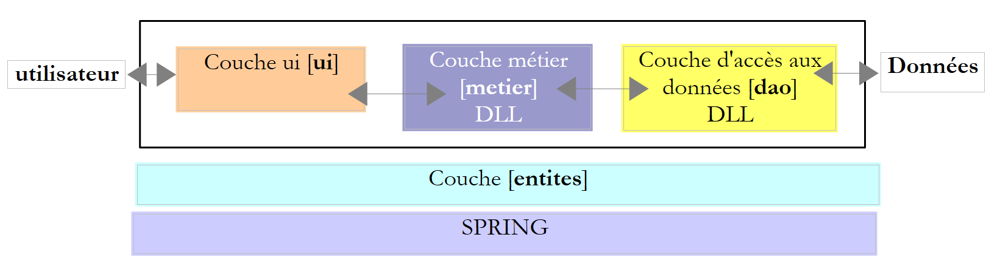 |
数据存储在数据库中，而 [ui] 层是一个图形界面：
 |
我们将沿用该架构，并将其部署在两台机器上：
 |
- 一台名为 [serveur] 的机器将托管第 7 版的 [metier] 和 [dao] 层。 将构建一个 TCP/IP 层 [serveur] [1]，以便互联网用户能够查询税务计算服务。
- 一台 [client] 机器将托管第 7 版的 [ui] 层。 将构建一个 TCP/IP 层 [client] [2]，以便 [ui] 层能够查询税务计算服务。
此处的架构发生了根本性变化。第 7 版是一个单机 Windows 应用程序。第 8 版则转变为基于互联网的客户端/服务器应用程序。服务器将能够同时为多个客户端提供服务。
我们将首先编写应用程序的 [serveur] 部分。
11.9.2. 税款计算服务器
11.9.2.1. Visual Studio 项目
 |
Visual Studio 项目结构如下：
 |
- 在 [1] 项目中，包含以下组件：
- [ServeurImpot.cs]：以控制台应用程序形式呈现的税款计算 TCP/IP 服务器。
- [dbimpots.sdf]：第9.8.5节所述的SQL Server 7.0 Compact数据库。
- [App.config]：应用程序的配置文件。
- 在 [2] 中，[lib] 文件夹包含项目所需的 DLL：
- [ImpotsV7-dao]：第 7 版的 [dao] 层
- [ImpotsV7-metier]：第 7 版的 [metier] 层
- [antlr.runtime, CommonLogging, Spring.Core]（用于 Spring
- 在 [3] 中，项目引用
11.9.2.2. 应用程序配置
文件 [App.config] 由 Spring 调用。其内容如下：
<?xml version="1.0" encoding="utf-8" ?>
<configuration>
<configSections>
<sectionGroup name="spring">
<section name="context" type="Spring.Context.Support.ContextHandler, Spring.Core" />
<section name="objects" type="Spring.Context.Support.DefaultSectionHandler, Spring.Core" />
</sectionGroup>
</configSections>
<spring>
<context>
<resource uri="config://spring/objects" />
</context>
<objects xmlns="http://www.springframework.net">
<object name="dao" type="Dao.DataBaseImpot, ImpotsV7-dao">
<constructor-arg index="0" value="System.Data.SqlServerCe.3.5"/>
<constructor-arg index="1" value="Data Source=|DataDirectory|\dbimpots.sdf;" />
<constructor-arg index="2" value="select data1, data2, data3 from data"/>
</object>
<object name="metier" type="Metier.ImpotMetier, ImpotsV7-metier">
<constructor-arg index="0" ref="dao"/>
</object>
</objects>
</spring>
</configuration>
- 第 16-20 行：与 SQL 紧凑型服务器数据库关联的 [dao] 层配置
- 第 21-23 行：[metier] 层的配置。
这是版本 7 中 [ui] 层使用的配置文件。该文件已在第 9.8.4 节中介绍。
11.9.2.3. 服务器运行原理
服务器启动时，服务器应用程序会实例化 [metier] 和 [dao] 层，然后显示一个管理控制台界面：
管理控制台支持以下命令：
用于在指定端口上启动服务 | |
用于停止服务。随后可在同一端口或另一个端口上重新启动该服务。 | |
在控制台上启用客户端/服务器对话的回显 | |
用于禁用回显 | |
用于显示服务的活动/非活动状态 | |
退出应用程序 |
启动服务器：
现在，让我们运行第11.8节中之前研究过的异步图形TCP客户端。

客户端已连接。它可以向税务计算服务器发送以下命令：
以获取允许的命令列表 | |
用于计算某人的税款，该人拥有 nbEnfants 个子女，工资为 salaireAnnuel 欧元。marié 的值为 0 表示已婚，否则为 1。 | |
用于关闭与服务器的连接 |
以下是一个对话示例：
 |
在服务器端，控制台显示如下内容：
启用回显功能，并从图形客户端重新发起一次对话：
 |
此时管理控制台显示如下内容：
- 第 1 行：客户端/服务器对话的回显已启用
- 第 2 行：收到一个客户端请求
- 第 3 行：该客户端发送了命令 [aide]
- 第 4-7 行：服务器返回的 4 行响应。
停止服务：
- 第1行：请求停止服务（而非应用程序本身）
- 第2行：由于服务器因等待客户端请求而处于阻塞状态，却因监听服务关闭而被突然中断，导致出现异常。
- 第3行：现在可以通过start port重新启动服务，或通过quit停止服务。
在监听服务停止之前，另一个客户端正在通过另一条连接进行通信。该连接不会因监听套接字的关闭而关闭。客户端可以继续发送命令：在监听服务关闭前与其关联的服务线程将继续对其进行响应：

11.9.3. 税务计算TCP服务器的代码
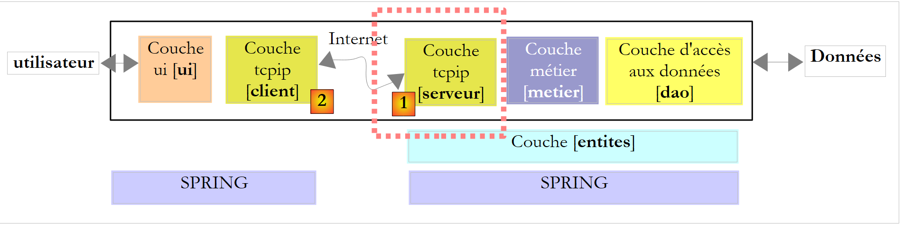 |
1  |
服务器代码 [ServeurImpot.cs] 如下：
...
namespace Chap9 {
public class ServeurImpot {
// 线程与方法之间的数据共享
private static IImpotMetier metier = null;
private static int port;
private static TcpListener service;
private static bool actif = false;
private static bool echo = false;
// 主程序
public static void Main(string[] args) {
// [metier] 和 [dao] 层的实例化
IApplicationContext ctx = null;
metier = null;
try {
// Spring 上下文
ctx = ContextRegistry.GetContext();
// 在 [metier] 层上请求引用
metier = (IImpotMetier)ctx.GetObject("metier");
// 线程池配置
ThreadPool.SetMinThreads(10, 10);
ThreadPool.SetMaxThreads(10, 10);
// 在无限循环中读取通过键盘输入的服务器管理命令
string commande = null;
string[] champs = null;
while (true) {
// 提示符
Console.Write("Serveur de calcul d'impôt >");
// 读取命令
commande = Console.ReadLine().Trim().ToLower();
champs = Regex.Split(commande, @"\s+");
// 执行命令
switch (champs[0]) {
case "start":
// 活动？
if (actif) {
//错误
Console.WriteLine("Le serveur est déjà actif");
} else {
// 端口验证
if (champs.Length != 2 || !int.TryParse(champs[1], out port) || port <= 0) {
Console.WriteLine("Syntaxe : start port. Port incorrect");
} else {
// 启动监听服务
ThreadPool.QueueUserWorkItem(doEcoute, null);
}
}
break;
case "echo":
// echo start / stop
if (champs.Length != 2 || (champs[1] != "start" && champs[1] != "stop")) {
Console.WriteLine("Syntaxe : echo start / stop");
} else {
echo = champs[1] == "start";
}
break;
case "stop":
// 服务结束
if (actif) {
service.Stop();
actif = false;
}
break;
case "status":
// 服务器状态
if (actif) {
Console.WriteLine("Le service est lancé sur le port {0}", port);
} else {
Console.WriteLine("Le service n'est pas lancé}");
}
break;
case "quit":
// 退出应用程序
Console.WriteLine("Fin du service");
Environment.Exit(0);
break;
default:
// 命令错误
Console.WriteLine("Commande incorrecte. Utilisez (start,stop,echo, status, quit)");
break;
}
}
} catch (Exception e1) {
// 显示异常
Console.WriteLine("L'erreur suivante s'est produite à l'initialisation de l'application : {0}", e1.Message);
return;
}
}
private static void doEcoute(Object data) {
...
}
....
}
}
- 第 18-21 行：[metier] 和 [dao] 层由 [App.config] 配置的 Spring 进行实例化。随后初始化第 6 行的全局变量 metier。
- 第24-25行：将应用程序的线程池配置为最小和最大各10个线程。
- 第30-86行：服务管理命令（start、stop、quit、echo、status）的输入循环。
- 第 32 行：每次输入新命令时显示的服务器提示符
- 第 34 行：读取管理员命令
- 第 35 行：将命令拆分为字段以便进行解析
- 第 38-52 行：start port 命令，用于启动监听服务
- 第 40 行：如果服务已处于活动状态，则无需执行任何操作
- 第45行：验证端口是否存在且正确。若存在，则设置第7行中的全局变量port。
- 第 49 行：监听服务将由一个子线程管理，以便主线程能够继续执行控制台命令。 如果方法 doEcoute 成功建立连接，则第 8 行的全局变量 service 和第 9 行的全局变量 actif 将被初始化。
- 第 53-60 行：echo start / stop 命令，用于在控制台上启用/禁用客户端/服务器对话的回显
- 第 58 行：设置第 7 行中的全局变量 echo
- 第 61-67 行：stop 命令，用于停止监听服务。
- 第 64 行：停止监听服务
- 第 68-75 行：命令 status，用于显示服务的活动/非活动状态
- 第 76-80 行：命令 quit，用于停止所有操作。
负责监听客户端请求的线程执行以下方法 doEcoute：
private static void doEcoute(Object data) {
// 监听客户端请求的线程
try {
// 正在创建服务
service = new TcpListener(IPAddress.Any, port);
// 启动服务
service.Start();
// 服务器已启动
actif = true;
// 监控
Console.WriteLine("Serveur de calcul d'impôt lancé sur le port {0}", port);
// 客户服务循环
TcpClient tcpClient = null;
// 客户编号
int numClient = 0;
// 无限循环
while (true) {
// 等待客户
tcpClient = service.AcceptTcpClient();
// 服务由另一个任务提供
ThreadPool.QueueUserWorkItem(doService, new Client() { CanalTcp = tcpClient, NumClient = numClient });
// 下一个客户
numClient++;
}
} catch (Exception ex) {
// 报告错误
Console.WriteLine("L'erreur suivante s'est produite sur le serveur : {0}", ex.Message);
}
}
// 客户信息
internal class Client {
public TcpClient CanalTcp { get; set; } // 与客户端建立连接
public int NumClient { get; set; } // 客户编号
}
此处的代码与第 11.6.1 节中讨论的回显服务器代码类似。我们仅对不同之处进行说明：
- 第7行：倾听服务已启动
- 第9行：注意到该服务现已处于活动状态
第21行，客户由执行以下方法 doService 的服务线程处理：
private static void doService(Object infos) {
// 获取待服务的客户
Client client = infos as Client;
// 为客户提供服务
Console.WriteLine("Début du service au client {0}", client.NumClient);
// 连接处理 TcpClient
try {
using (TcpClient tcpClient = client.CanalTcp) {
using (NetworkStream networkStream = tcpClient.GetStream()) {
using (StreamReader reader = new StreamReader(networkStream)) {
using (StreamWriter writer = new StreamWriter(networkStream)) {
// 未缓冲的输出流
writer.AutoFlush = true;
// 向客户端发送欢迎消息
writer.WriteLine("Bienvenue sur le serveur de calcul de l'impôt");
// 请求/写入响应读取循环
string demande = null;
bool serviceFini = false;
while (!serviceFini && (demande = reader.ReadLine()) != null) {
// 控制台监控
if (echo) {
Console.WriteLine("<--- Client {0} : {1}", client.NumClient, demande);
}
// 请求解析
demande = demande.Trim().ToLower();
// 空请求？
if (demande.Length == 0) {
// 请求错误
writeClient(writer,client.NumClient,"Commande non reconnue. Utilisez la commande aide.");
return;
}
// 将请求拆分为字段
string[] champs = Regex.Split(demande, @"\s+");
// 分析
switch (champs[0].ToLower()) {
case "aide":
writeClient(writer, client.NumClient, "Commandes acceptées\n1-aide\n2-impot marié(O/N) nbEnfants salaireAnnuel\n3-aurevoir");
break;
case "impot":
// 计算税款
writeClient(writer, client.NumClient, calculImpot(writer, client.NumClient, champs));
break;
case "aurevoir":
serviceFini = true;
writeClient(writer, client.NumClient, "Au revoir...");
break;
default:
writeClient(writer, client.NumClient, "Commande non reconnue. Utilisez la commande aide.");
break;
}
}
}
}
}
}
} catch (Exception e) {
// 错误
Console.WriteLine("L'erreur suivante s'est produite lors du service au client {0} : {1}", client.NumClient, e.Message);
} finally {
Console.WriteLine("Fin du service au client {0}", client.NumClient);
}
}
private static void writeClient(StreamWriter writer, int numClient, string message) {
// 控制台输出？
if (echo) {
Console.WriteLine("---> Client {0} : {1}", numClient, message);
}
// 向客户端发送消息
writer.WriteLine(message);
}
这里再次出现与第11.6.1节中讨论的回显服务器类似的代码。我们仅对不同之处进行说明：
- 第 15 行：客户端连接后，服务器会向其发送欢迎信息。
- 第 19-52 行：读取客户端命令的循环。当客户端发送命令“aurevoir”时，该循环停止。
- 第27行：处理空命令的情况
- 第34行：将请求拆分为字段以便进行解析
- 第37行：命令aide：客户端请求允许的命令列表
- 第 40 行：命令 impot：客户端请求计算税款。系统返回由方法 calculImpot 生成的响应消息，我们稍后将详细说明该方法。
- 第 44 行：命令 aurevoir：客户端表示已完成操作。
- 第45行：准备退出读取客户请求的循环（第19-52行）
- 第 46 行：向客户端发送一条告别消息
- 第 48 行：命令错误。向客户端发送错误消息。
命令 impot 的处理由以下方法 calculImpot 负责：
private static string calculImpot(StreamWriter writer, int numClient, string[] champs) {
// 已婚状态查询（是/否） nbEnfants salaireAnnuel
// 需要4个字段
if (champs.Length != 4) {
return "Commande calcul incorrecte. Utilisez la commande aide.";
}
// 字段 [1]
string marié = champs[1];
if (marié != "o" && marié != "n") {
return "Commande calcul incorrecte. Utilisez la commande aide.";
}
// 字段 [2]
int nbEnfants;
if (!int.TryParse(champs[2], out nbEnfants)) {
return "Commande calcul incorrecte. Utilisez la commande aide.";
}
// 字段 [3]
int salaireAnnuel;
if (!int.TryParse(champs[3], out salaireAnnuel)) {
return "Commande calcul incorrecte. Utilisez la commande aide.";
}
// 没问题——正在计算税款
int impot = 0;
try {
impot = metier.CalculerImpot(marié == "o", nbEnfants, salaireAnnuel);
return impot.ToString();
} catch (Exception ex) {
return ex.Message;
}
}
- 第 1 行：该方法接收 impot 命令的字段数组作为第 3 个参数。如果该命令格式正确，其形式应为：impot marié nbEnfants salaireAnnuel。该方法返回应发送给客户端的响应。
- 第4行：验证命令是否包含4个字段
- 第8行：验证字段marié是否有效
- 第14行：验证字段nbEnfants是否有效
- 第 19 行：验证字段 salaireAnnuel 是否有效
- 第25行：使用[metier]层中的CalculerImpot方法计算税款。需注意，该层封装在DLL中。
- 第 26 行：如果 [metier] 层返回了结果，则将该结果返回给客户端。
- 第28行：如果[metier]层抛出了异常，则将该异常消息返回给客户端。
11.9.4. 税务计算 TCP 服务器的图形客户端
11.9.4.1. 项目 Visual Studio
 |
图形客户端的 Visual Studio 项目如下：
 |
- 在 [1] 中，该解决方案包含两个项目，分别对应应用程序的两个层
- 在 [2] 中，TCP 客户端扮演着 [metier] 层的角色，而 [ui] 层则作为其底层。因此我们将同时使用这两个术语。
- 在 [3] 中，[ui] 层是第 7 版的，只有一个细节不同，我们稍后会讨论
11.9.4.2. [metier]层
IImpotMetier 接口未作更改。它仍然是第 7 版的接口：
namespace Metier {
public interface IImpotMetier {
int CalculerImpot(bool marié, int nbEnfants, int salaire);
}
}
该接口的实现类如下所示：
using System.Net.Sockets;
using System.IO;
namespace Metier {
public class ImpotMetierTcp : IImpotMetier {
// 信息 [serveur]
private string Serveur { get; set; }
private int Port { get; set; }
// 计算税款
public int CalculerImpot(bool marié, int nbEnfants, int salaire) {
// 连接到服务
using (TcpClient tcpClient = new TcpClient(Serveur, Port)) {
using (NetworkStream networkStream = tcpClient.GetStream()) {
using (StreamReader reader = new StreamReader(networkStream)) {
using (StreamWriter writer = new StreamWriter(networkStream)) {
// 未缓冲的输出流
writer.AutoFlush = true;
// 跳过欢迎信息
reader.ReadLine();
// 请求
writer.WriteLine(string.Format("impot {0} {1} {2}",marié ? "o" : "n",nbEnfants, salaire));
// 响应
return int.Parse(reader.ReadLine());
}
}
}
}
}
}
}
- 第 7 行：税款计算 TCP 服务器的名称或 IP 地址
- 第 8 行：该服务器的监听端口
- 这两个属性将在实例化 [ImpotMetierTcp] 类时由 Spring 进行初始化。
- 第11行：税额计算方法。当该方法执行时，属性Serveur和Port已初始化。代码中体现了典型的TCP客户端操作流程
- 第 13 行：与服务器的连接已建立
- 第14-16行：获取（第14行）与该连接关联的网络流，并从中提取读取流（第15行）和写入流（第16行）。
- 第 18 行：写流必须为非缓冲模式
- 第20行：需注意，建立连接时，服务器会向客户端发送第一行内容，即欢迎信息“欢迎使用税费计算服务器”。该信息被读取后直接忽略。
- 第22行：向服务器发送如下命令：impot o 2 60000，请求其计算一位已婚、育有2个孩子且年薪为60000欧元的纳税人的税额。
- 第24行：服务器会返回税额，格式为“4282”；若请求格式错误（此处不会发生）或税额计算出现问题，则返回错误信息。 此处未处理后一种情况，但若能处理，代码无疑会更“整洁”。事实上，若读取的行是错误信息，由于向整数的转换将失败，系统会抛出异常。图形界面捕获到的异常将是转换错误，而原始异常的性质却截然不同。建议读者改进此代码。
- 第25-28行：释放所有通过“using”子句使用的资源。
[metier] 层已编译到 DLL 中 ImpotsV8-metier.dll：

11.9.4.3. [ui] 层
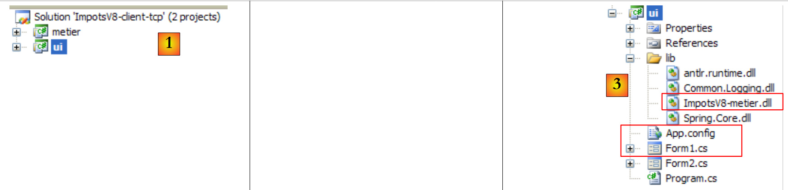 |
[ui] [1,3] 层即第 7 版第 9.8.4 节中讨论的层，仅有三处细节不同：
- [metier]在[App.config]中的配置有所不同，因为其实现方式已发生变更
- 图形界面 [Form1.cs] 已进行修改，用于显示可能出现的异常
- [metier] 层位于 DLL [ImpotsV8-metier.dll] 中。
文件 [App.config] 内容如下：
<?xml version="1.0" encoding="utf-8" ?>
<configuration>
<configSections>
<sectionGroup name="spring">
<section name="context" type="Spring.Context.Support.ContextHandler, Spring.Core" />
<section name="objects" type="Spring.Context.Support.DefaultSectionHandler, Spring.Core" />
</sectionGroup>
</configSections>
<spring>
<context>
<resource uri="config://spring/objects" />
</context>
<objects xmlns="http://www.springframework.net">
<object name="metier" type="Metier.ImpotMetierTcp, ImpotsV8-metier">
<property name="Serveur" value="localhost"/>
<property name="Port" value="27"/>
</object>
</objects>
</spring>
</configuration>
- 第 16 行：使用 DLL ImpotsV8-metier.dll 中的 Metier.ImpotMetierTcp 类实例化 [metier] 层
- 第 17-18 行：初始化类 Metier.ImpotMetierTcp 的 Server 和 Port 属性。服务器将位于 localhost 机器上，并通过 27 号端口运行。
向用户展示的图形界面如下：
 |
- 在 [1] 中，我们添加了一个 TextBox 字段，用于显示可能出现的异常。该字段在之前的版本中并不存在。
除这一细节外，表单代码与第6.4.3节中已探讨的内容相同。请读者参阅该节。在[2]中，展示了一个通过以下方式启动服务器获得的执行示例：
客户端的屏幕截图 [2] 对应上文客户端 9 的相关行。
11.9.5. 结论
我们再次成功复用了现有代码，既无需修改（服务端的 [metier]、[dao] 层），也仅需极少修改（客户端的 [ui] 层）。 这得益于我们系统地使用接口，并借助 Spring 对其进行实例化。如果在第 7 版中，我们将业务代码直接放入图形界面的事件处理程序中，那么该业务代码将无法被复用。这就是单层架构的主要缺点。
最后需要指出的是，[ui]层完全不知道税额是由远程服务器计算得出的。